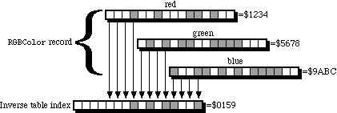
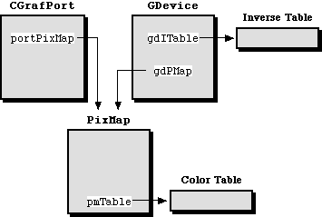

|
|
Using Color QuickDraw to draw off screen is a common requirement of
applications and other kinds of programs that run on the Macintosh. This Note
discusses what Color QuickDraw needs in a graphics environment and how to
create one for off-screen drawing. A brief discussion of GWorlds, which are
off-screen graphics environments that are set up by the system, is given to
help you decide whether to use them or the do-it-yourself techniques described
in this Note for setting up an off-screen graphics environment. The author's
intent is to provide concepts and routines for creating an off-screen graphics
environment, and also to explain why existing routines for off-screen drawing
act as they do.
[Jul 24 2000]
|
Introduction
Many, many thanks go to Guillermo Ortiz, Konstantin Othmer, Bruce Leak, and Jon Zap for all their expertise on this subject, Rich Collyer, Rick Blair, and Jim Friedlander for paving the way, and especially to all people who inspired this update by asking great off-screen drawing questions.
Off-Screening
The Macintosh, as with every other CPU ever made by Apple, has memory-mapped
video. That is, what you see on the screen is just the visual representation of
a part of memory that's reserved for the video hardware (that's stretching the
truth just a bit in the case of the text screens of the original Apple
computer, the Apple II line, and the Apple III because there's also a character
generator in those, but the overall process still looks roughly the same). If
you change the contents of a memory location in this part of memory, then
you'll see the corresponding location on the screen change when the video
hardware draws the next frame or field of video. The resident raster graphics
package, QuickDraw in the case of the Macintosh, draws images by stuffing the
right values into the right places in the part of memory reserved for the video
display. The resulting image on the screen looks like a line or perhaps an oval
if you asked QuickDraw to draw a line or an oval, or it could be an entire
complex image if you asked QuickDraw to draw one. This is normal,
on-screen drawing.
Because video memory is a part of RAM just like any other part of RAM in the
memory map of the Macintosh (or almost like; video memory might exist on a
NuBus(TM) video card, but it's still RAM), QuickDraw can
be told to draw into a part of memory that isn't reserved for the video
hardware, maybe into a part of your own application's heap. When you tell
QuickDraw to draw into a part of memory that's not reserved for the video
hardware, you can't see any of the results. This is off-screen drawing. There
are plenty of perfectly good reasons to do this, such as providing storage for
a paint-style document or to smoothly animate an image, but the assumption here
is that you have a perfectly good reason to do this so you're more interested
in the "how" of it instead of the "why" of it. If you need to know why, there
are several books that cover off-screen drawing and the perfectly good reasons
to do such a thing. A good place to start is Scott Knaster's book, Macintosh
Programming Secrets, referenced at the end of this Note.
This Note is divided into these major sections:
- The introduction is the part that you're reading now.
- The Building Blocks provides an overview of the data structures that you need to tell Color QuickDraw to draw off screen.
- Building the Blocks discusses the construction and initialization of these data structures.
- Playing With Blocks shows an example of the use of these structures to draw off screen.
- Put That Checkbook Away! discusses some variations of these techniques to handle off-screen drawing for special cases.
- The
GWorld Factor provides a brief overview of GWorlds, how to use them, and how they compare and contrast to the manual techniques that are described in most of this Note.
Those of you who aren't quite sure whether to use GWorlds or the do-it-yourself
techniques might want to skip ahead for a moment to "The GWorld Factor" just in
case doing it yourself is a waste of time. In any case, it's a good idea to
read this whole Note because the concepts are mostly the same whether you're
using GWorlds or not. GWorlds just make the process a lot easier, and they let
you take advantage of the 8*24 GC video card. But, we're not in that section of
the Note yet.
Back to top The Building Blocks
Before you can tell QuickDraw to draw off of the screen, you'll need to build
three major data structures: a CGrafPort, a PixMap, and a
GDevice. You'll also need a couple of tables that define the colors
involved with drawing to and copying from the off-screen image: the color table
and the inverse table. Of course, you'll need the pixel image itself, which is
often called the "pixel buffer" or the "image buffer" or the "off-screen
buffer" or just "the buffer." It's always called the "pixel image" in this
Note. It doesn't necessarily buffer anything anyway.
The CGrafPort
A CGrafPort describes a drawing environment, and it's the color
version of the GrafPort structure that's described on pages 147
through 155 in the QuickDraw chapter of Inside Macintosh Volume I. The
drawing environment consists of, among other things, the size and location of
the graphics pen, the foreground and background colors to use when something is
drawn, the pattern to use, the region to clip all drawing to, and the portion
of a pixel image that the CGrafPort logically exists in. Any
initialized CGrafPort or GrafPort can be set as the current
port through the _SetPort routine. The current port is a set of
parameters that are implicitly passed to most QuickDraw routines.
The most important reason to build a new CGrafPort when you draw off
screen rather than using an existing CGrafPort is so that switching
between drawing to an off-screen graphics environment and drawing to one or
more windows (each of which is an extended GrafPort or
CGrafPort structure) on the screen is very easy. Some people use just
one CGrafPort to share between on-screen and off-screen graphics
environments, and switch their PixMap structures to switch between
drawing on screen and drawing off screen. That does work, but if the off-screen
and on-screen graphics environments have a different clipRgn,
visRgn, pen characteristic, portRect, or any other
characteristics that are different, then those must be switched at that time
too. If you instead create a CGrafPort that's dedicated to one
graphics environment, then a simple call to _SetPort effectively
switches all these things for you at once. That's why every window on the
screen comes with its own port. A simple call to _SetPort switches
between the characteristics of each window even if each window has radically
different drawing characteristics.
The CGrafPort data structure is more completely described in the
"Color QuickDraw" chapter of Inside Macintosh Volume V, pages 49 through
52, and in the "Graphics Overview" chapter of Inside Macintosh Volume
VI, pages 16-12 through 16-13.
The PixMap
A pixel image alone is just a formless blob of memory. Pixel maps, defined by
the PixMap structure, describe pixel images, giving them a form and
structure that's suitable for Color QuickDraw to draw into them and copy from
them. The PixMap structure tells you the dimensions and location in
memory of the pixel image, its coordinate system, and the depth and format of
the pixels. Pixel maps that describe indexed-color pixel images additionally
describe the colors that are represented by the values of the pixels in the
pixel image. This is done through the color table, also known as the color
look-up table or CLUT. Color tables are attached to pixel maps through their
pmTable field. Direct-color pixel images have pixel values that
describe their own colors, and so color tables aren't needed for those.
The PixMap structure is described in the "Color QuickDraw" chapter of
Inside Macintosh Volume V, pages 52 through 55, and in the "Graphics
Overview" chapter of Inside Macintosh Volume VI, pages 16-11 through
16-12. The concept of direct-color and indexed-color pixels is described in
this same chapter on pages 16-16 through 16-18, and also in the "Color
QuickDraw" chapter of the same volume on pages 17-4 through 17-10.
The GDevice
Graphics devices, defined by the GDevice structure, describe color
environments. They're the most misunderstood data structure when it comes to
off-screen graphics environments for three major reasons: first, they're not
originally documented as being relevant to humans; second, they look as though
they're only for screens; and third, it looks as though color tables describe
color environments. We can dispose of these myths here: graphics devices are
documented as being useful to humanity in this Note at least; they're
critically important for both on-screen and off-screen drawing; and color
tables describe the colors in pixel images, not color environments.
What's all this about color environments? In theory, there are virtually three
hundred trillion colors available with Color QuickDraw through the 48-bit
RGBColor record. In reality, there are never this many colors
available, and in fact there might be only two. Color QuickDraw maps the
theoretical color that you specify to the pixel value of the closest available
color in the current color environment. This can be done with a color table,
but that's not very efficient. Finding the closest available color to an
RGBColor in a color table means searching the entire color table for
that one closest color. If that's done just once, then performance isn't much
of an issue, but if it's done many times, the performance hit could be
significant. A very bad case of this is _CopyBits, where every pixel
value in the source image is converted to an RGBColor by looking it up
in the color table of the source PixMap. If the color table of the
destination PixMap had to be searched to find the closest available
color for every pixel in the source PixMap, then the performance of
even the most straightforward _CopyBits call could be a lot slower
than it has to be.
To avoid this performance hit, the current GDevice provides an
inverse table and a device type which are used to determine the available set
of colors. Inverse tables are anticolor tables. Where color tables give you a
color for a given pixel value, inverse tables give you a pixel value for a
given color. Every conceivable color table has a corresponding conceivable
inverse table, just as every positive real number has a corresponding negative
real number, or every Mr. Spock has a corresponding Mr. Spock with a goatee.
The device type specifies whether the color environment uses the indexed-color,
fixed-color, or direct-color model. In the direct-color model, the inverse
table is empty. Only the indexed-color and direct-color models are described in
this Note.
When you specify a color in an indexed-color environment, Color QuickDraw takes
the RGBColor specification and converts it into a value that can be
used as an index into the inverse table of the current GDevice. To do
this conversion, Color QuickDraw takes the top few significant bits of each
color component and combines them into part of a 16-bit word, blue bits in the
least significant bits, green bits right above it, and the red bits right above
green bits. Any unused bits are in the most significant bits of the 16-bit
word. The resulting 16-bit word is used as an index into the inverse table. The
value in the inverse table at that index is the pixel value which best
represents that color in the current color environment. The number of bits of
each component that are used is determined by what's called the "resolution" of
the inverse table. Almost always, the resolution of an inverse table is four
bits, meaning the most significant four bits of each component are used to form
the index into the inverse table. Figure 1 shows how an RGBColor
record is converted to an index into an inverse table when the inverse-table
resolution is four.

Figure 1. Conversion of RGBColor Record to Inverse-Table Index
The same process is used when _CopyBits is called with an
indexed-color destination. Each pixel in the source pixel image is converted to
an RGBColor either by doing a table look-up of the source pixel map's
color table if the source pixel image uses indexed colors, or by expanding the
pixel value to an RGBColor record if the source pixel image uses
direct colors. The resulting RGBColor is then used to look up a pixel
value in the inverse table of the current GDevice, and this pixel
value is put into the destination pixel image.
If you specify a color in a direct-color environment, then the resulting
RGBColor is converted to a direct pixel value by the processes that
are shown on pages 17-6 through 17-9 of the "Color QuickDraw" chapter of
Inside Macintosh Volume VI.
Usually, inverse-table look-up involves an extra step to find what are called
"hidden colors" using proprietary information that's stored at the end of the
inverse table. With an inverse-table resolution of four, only 16 shades of any
particular component can be distinguished, and that's often not enough. An
inverse table with a resolution of five is much larger, but it still only gives
you 32 shades of any component. Hidden colors are looked up after the normal
inverse-table look-up to give a much more accurate representation of the
specified color in the current color environment than the inverse-table look-up
alone can produce. Sometimes, most notably when the arithmetic transfer modes
are used or if dithering is used, the hidden colors are ignored.
When a new color table is assigned to a PixMap or when its existing
color table is modified, then a new corresponding inverse table should be
generated for the GDevice that'll be used when drawing into that
environment. Normally, this happens automatically without you having to do any
more than inform Color QuickDraw of the change. This is described in more
detail in "Changing the Off-Screen Color Table" later in this Note.
Graphics devices are documented in the "Graphics Devices" chapter of Inside
Macintosh Volume VI which supersedes the "Graphics Devices" chapter of
Inside Macintosh Volume V. They're also discussed in the "Graphics
Overview" chapter of Inside Macintosh Volume VI, pages 16-13 through
16-14. The inverse-table mechanism is described in the "Color Manager" chapter
of Inside Macintosh Volume V, pages 137 through 139.
All Together Now
There are a lot of different ways to put the three structures together, and
this Note discusses the architecture that's shown in Figure 2. This architecture is
useful when you want a simple, atomic, off-screen graphics environment.

Figure 2. Relationships Between Structures for Off-Screen Drawing
Notice that there's no way to get to the GDevice from the
CGrafPort, nor is there a way to get to the CGrafPort from
the GDevice, though the PixMap can be found through either
one. Your application must keep track of both the CGrafPort
and the GDevice.
Back to top Building the Blocks
As with just about any algorithm, there are many ways to put the different
structures together that form an off-screen graphics environment. This section
covers just one way to build the architecture that's shown in Figure 2.
Building the CGrafPort
The CGrafPort structure is the easiest one to put together because the
_OpenCPort routine initializes so many of the fields of the
CGrafPort structure for you. It also allocates and initializes the
structures that are attached to every CGrafPort, such as the
visRgn, clipRgn, grafVars handle, and so forth. Most
of these are initialized with values that are fine for general purposes, but
the visRgn, clipRgn, and portRect fields should be
set to the desired boundary rectangle of the off-screen graphics environment.
What follows is an overview of each of the fields that you have to worry about
when you're setting up a CGrafPort for drawing off screen.
portPixMap handle to the off-screen PixMap. _OpenCPort
initializes this field to a copy of the PixMap that's attached to the
gdPMap field of the current GDevice. An overview of setting
up this PixMap for drawing off screen is given in "Building the
PixMap" later in this Note.
portRect specifies the rectangular area of the associated pixel image that
this CGrafPort controls. This field should be set to the desired
rectangular area of the off-screen image because _OpenCPort doesn't
necessarily initialize it to this size. Usually, the top-left corner of this
rectangle has the coordinates (0, 0), but not necessarily so.
visRgn handle to the region that specifies the visible area into which you
can draw. _OpenCPort doesn't necessarily initialize it to the size of
the off-screen image, so it should be set to the same size and coordinates as
the portRect and left at that. This field is more important for
windows because parts of them can be hidden by other windows.
clipRgn handle to the region that specifies the logical area into which
you can draw. _OpenCPort initializes it to cover the entire QuickDraw
coordinate plane. It's usually a good idea to set it to the same size and
coordinates as the portRect to avoid problems if the clipRgn
is scaled or translated, which causes its signed integer coordinates to
overflow and turn it into an empty region. One of the most common cases of this
occurs when a picture that's created in this CGrafPort is drawn into a
destination rectangle that's any larger than or translated from the original
picture frame. Everything in the picture, including the clip region, is scaled
to fit the destination rectangle. If the clip region covers the entire
QuickDraw coordinate plane, then its coordinates overflow their signed integer
bounds, and the clip region becomes logically empty. The result is that nothing
is drawn.
The CreateOffScreen routine in Listing 1 creates an off-screen graphics
environment, given a boundary rectangle, pixel depth, and color table, and it
returns a new off-screen CGrafPort and GDevice, along with an
error code. The desired pixel depth in bits per pixel is given in the
depth parameter. If the pixel depth is eight or less, then an
indexed-color graphics environment is created and a color table is required in
the colors parameter. If the pixel depth is 16 or 32 bits per pixel
and 32-Bit QuickDraw is available, then a direct-color graphics environment is
created and the colors parameter is ignored. If 32-Bit QuickDraw isn't
available, then a pixel depth of 16 or 32 bits per pixel results in
CreateOffScreen doing nothing more than returning a parameter error. A
description of CreateOffScreen is given following the listing.
MPW Pascal Listing 1
FUNCTION CreateOffScreen(
bounds: Rect; {Bounding rectangle of off-screen}
depth: Integer; {Desired number of bits per pixel in off-screen}
colors: CTabHandle; {Color table to assign to off-screen}
VAR retPort: CGrafPtr; {Returns a pointer to the new CGrafPort}
VAR retGDevice: GDHandle {Returns a handle to the new GDevice}
): OSErr;
CONST
kMaxRowBytes = $3FFE; {Maximum number of bytes in a row of pixels}
VAR
newPort: CGrafPtr; {Pointer to the new off-screen CGrafPort}
newPixMap: PixMapHandle; {Handle to the new off-screen PixMap}
newDevice: GDHandle; {Handle to the new off-screen GDevice}
qdVersion: LongInt; {Version of QuickDraw currently in use}
savedPort: GrafPtr; {Pointer to GrafPort used for save/restore}
savedState: SignedByte; {Saved state of color table handle}
bytesPerRow: Integer; {Number of bytes per row in the PixMap}
error: OSErr; {Returns error code}
BEGIN
(* Initialize a few things before we begin *)
newPort := NIL;
newPixMap := NIL;
newDevice := NIL;
error := noErr;
(* Save the color table's current state and make sure it isn't purgeable*)
IF colors <> NIL THEN
BEGIN
savedState := HGetState(Handle(colors));
HNoPurge(Handle(colors));
END;
(* Calculate the number of bytes per row in the off-screen PixMap *)
bytesPerRow := ((depth * (bounds.right - bounds.left) + 31) DIV 32) * 4;
(* Get the current QuickDraw version *)
error := Gestalt(gestaltQuickdrawVersion, qdVersion);
error := noErr;
(* Make sure depth is indexed or depth is direct and 32-Bit QD installed*)
IF (depth = 1) OR (depth = 2) OR (depth = 4) OR (depth = 8) OR
(((depth = 16) OR (depth = 32)) AND (qdVersion >= gestalt32BitQD))
THEN
BEGIN
(* Maximum number of bytes per row is 16,382; make sure within range*)
IF bytesPerRow <= kMaxRowBytes THEN
BEGIN
(* Make sure a color table is provided if the depth is indexed*)
IF depth <= 8 THEN
IF colors = NIL THEN
(* Indexed depth and clut is NIL; is parameter error *)
error := paramErr;
END
ELSE
(* # of bytes per row is more than 16,382; is parameter error *)
error := paramErr;
END
ELSE
(* Pixel depth isn't valid; is parameter error *)
error := paramErr;
(* If sanity checks succeed, then allocate a new CGrafPort *)
IF error = noErr THEN
BEGIN
newPort := CGrafPtr(NewPtr(SizeOf (CGrafPort)));
IF newPort <> NIL THEN
BEGIN
(* Save the current port *)
GetPort(savedPort);
(* Initialize the new CGrafPort and make it the current port*)
OpenCPort(newPort);
(* Set portRect, visRgn, and clipRgn to the given bounds rect*)
newPort^.portRect := bounds;
RectRgn(newPort^.visRgn, bounds);
ClipRect(bounds);
(* Initialize the new PixMap for off-screen drawing *)
error := SetUpPixMap(depth, bounds, colors, bytesPerRow,
newPort^.portPixMap);
IF error = noErr THEN
BEGIN
(* Grab the initialized PixMap handle *)
newPixMap := newPort^.portPixMap;
(* Allocate and initialize a new GDevice *)
error := CreateGDevice(newPixMap, newDevice);
END;
(* Restore the saved port *)
SetPort(savedPort);
END
ELSE
error := MemError;
END;
(* Restore the given state of the color table *)
IF colors <> NIL THEN
HSetState(Handle(colors), savedState);
(* One Last Look Around The House Before We Go... *)
IF error <> noErr THEN
BEGIN
(* Some error occurred; dispose of everything we allocated *)
IF newPixMap <> NIL THEN
BEGIN
DisposCTable(newPixMap^^.pmTable);
DisposPtr(newPixMap^^.baseAddr);
END;
IF newDevice <> NIL THEN
BEGIN
DisposHandle(Handle(newDevice^^.gdITable));
DisposHandle(Handle(newDevice));
END;
IF newPort <> NIL THEN
BEGIN
CloseCPort(newPort);
DisposPtr(Ptr(newPort));
END;
END
ELSE
BEGIN
(* Everything's OK; return refs to off-screen CGrafPort and GDevice*)
retPort := newPort;
retGDevice := newDevice;
END;
CreateOffScreen := error;
END;
MPW C Listing 1
#define kMaxRowBytes 0x3FFE /* Maximum number of bytes in a row of pixels */
OSErr CreateOffScreen(
Rect *bounds, /* Bounding rectangle of off-screen */
short depth, /* Desired number of bits per pixel in off-screen*/
CTabHandle colors, /* Color table to assign to off-screen */
CGrafPtr *retPort, /* Returns a pointer to the new CGrafPort */
GDHandle *retGDevice) /* Returns a handle to the new GDevice */
{
CGrafPtr newPort; /* Pointer to the new off-screen CGrafPort */
PixMapHandle newPixMap; /* Handle to the new off-screen PixMap */
GDHandle newDevice; /* Handle to the new off-screen GDevice */
long qdVersion; /* Version of QuickDraw currently in use */
GrafPtr savedPort; /* Pointer to GrafPort used for save/restore */
SignedByte savedState; /* Saved state of color table handle */
short bytesPerRow; /* Number of bytes per row in the PixMap */
OSErr error; /* Returns error code */
/* Initialize a few things before we begin */
newPort = nil;
newPixMap = nil;
newDevice = nil;
error = noErr;
/* Save the color table's current state and make sure it isn't purgeable*/
if (colors != nil)
{
savedState = HGetState( (Handle)colors );
HNoPurge( (Handle)colors );
}
/* Calculate the number of bytes per row in the off-screen PixMap */
bytesPerRow = ((depth * (bounds->right - bounds->left) + 31)
>>5) << 2;
/* Get the current QuickDraw version */
(void)Gestalt( gestaltQuickdrawVersion, &qdVersion );
/* Make sure depth is indexed or depth is direct and 32-Bit QD installed*/
if (depth == 1 || depth == 2 || depth == 4 || depth == 8 ||
((depth == 16 || depth == 32) && qdVersion >=gestalt32BitQD))
{
/* Maximum number of bytes per row is 16,382; make sure within range*/
if (bytesPerRow <= kMaxRowBytes)
{
/* Make sure a color table is provided if the depth is indexed */
if (depth <= 8)
if (colors == nil)
/* Indexed depth and clut is NIL; is parameter error */
error = paramErr;
}
else
/* # of bytes per row is more than 16,382; is parameter error */
error = paramErr;
}
else
/* Pixel depth isn't valid; is parameter error */
error = paramErr;
/* If sanity checks succeed, then allocate a new CGrafPort */
if (error == noErr)
{
newPort = (CGrafPtr)NewPtr( sizeof (CGrafPort) );
if (newPort != nil)
{
/* Save the current port */
GetPort( &savedPort );
/* Initialize the new CGrafPort and make it the current port */
OpenCPort( newPort );
/* Set portRect, visRgn, and clipRgn to the given bounds rect */
newPort->portRect = *bounds;
RectRgn( newPort->visRgn, bounds );
ClipRect( bounds );
/* Initialize the new PixMap for off-screen drawing */
error = SetUpPixMap( depth, bounds, colors, bytesPerRow,
newPort->portPixMap );
if (error == noErr)
{
/* Grab the initialized PixMap handle */
newPixMap = newPort->portPixMap;
/* Allocate and initialize a new GDevice */
error = CreateGDevice( newPixMap, &newDevice );
}
/* Restore the saved port */
SetPort( savedPort );
}
else
error = MemError();
}
/* Restore the given state of the color table */
if (colors != nil)
HSetState( (Handle)colors, savedState );
/* One Last Look Around The House Before We Go... */
if (error != noErr)
{
/* Some error occurred; dispose of everything we allocated */
if (newPixMap != nil)
{
DisposCTable( (**newPixMap).pmTable );
DisposPtr( (**newPixMap).baseAddr );
}
if (newDevice != nil)
{
DisposHandle( (Handle)(**newDevice).gdITable );
DisposHandle( (Handle)newDevice );
}
if (newPort != nil)
{
CloseCPort( newPort );
DisposPtr( (Ptr)newPort );
}
}
else
{
/* Everything's OK; return refs to off-screen CGrafPort and GDevice*/
*retPort = newPort;
*retGDevice = newDevice;
}
return error;
}
|
CreateOffScreen begins by making sure that the color table, if there is one,
doesn't get purged during the time that the off-screen graphics environment is
created. Then, a sanity check is done for the given depth, bounds, and color
table. The depth must be either 1, 2, 4, or 8 bits per pixel, or additionally
16 or 32 bits per pixel if 32-Bit QuickDraw is available. If these conditions
aren't satisfied, then it's decided that there's an error in the parameter
list, and CreateOffScreen does nothing more. To determine whether 32-Bit
QuickDraw is available or not, the _Gestalt routine is used. If
_Gestalt returns a value that's equal to or greater than the constant
gestalt32BitQD, then 32-Bit QuickDraw is available and depths of 16
and 32 bits per pixel are supported. It's not necessary to determine whether
_Gestalt is available or not because it's implemented as glue code in
the Macintosh Programmer's Workshop.
A check is then done to determine whether the number of bytes in each row of
the off-screen pixel image is too much for QuickDraw to handle. Color QuickDraw
can handle up to and including 16,382 ($3FFE) bytes in each row of any pixel
image. If the required number of bytes per row exceeds this amount, then
CreateOffScreen decides that there's an error in the parameter list and does
nothing more. The minimum number of bytes in a row that's enough to cover the
given boundary rectangle at the given pixel depth is calculated
with the formula:
bytesPerRow := ((depth * (bounds.right - bounds.left) + 31) DIV 32) * 4;
This formula multiplies the number of pixels across the PixMap by the
pixel depth to get the number of bits, and then this is divided by eight to get
the number of bytes. This division by eight looks very strange because the
number of bytes per row must be even, so this formula takes advantage of
integer division and multiplication to make the result come out even. This
particular formula additionally makes sure that the number of bytes per row is
a multiple of four. This helps optimize the performance of Color QuickDraw
operations because it allows Color QuickDraw to refer to each row beginning on
a long word boundary in memory.
The last sanity check is to make sure that a color table is given as a
parameter if it's needed. Indexed-color graphics environments need color
tables, so if the given pixel depth is eight or less (which implies an
indexed-color graphics environment) and the given color table is NIL, then
CreateOffScreen decides that there's an error in the parameter list and does
nothing more. If the given pixel depth is 16 or 32 (which implies a
direct-color graphics environment), then CreateOffScreen ignores the given
color table.
If all the sanity checks succeed, then the off-screen CGrafPort is
allocated using a call to _NewPtr, and then it's initialized and
opened as a CGrafPort by passing the resulting pointer to
_OpenCPort. Because _OpenCPort makes the new
CGrafPort the current port, the current port is first saved so that it
can be restored as the current port when CreateOffScreen is done.
As mentioned above, the _OpenCPort doesn't necessarily initialize the
portRect, visRgn, and clipRgn of the new
CGrafPort to the areas that are needed for any particular off-screen
graphics environment. So, the given boundary rectangle is assigned to the
portRect field, _RectRgn is called to make the
visRgn equal to the given boundary rectangle, and _ClipRect
is called to set the clipRgn so that it's equal to the given
boundary rectangle.
The PixMap in the portPixMap field needs to be initialized
for off-screen drawing, and that's handled by the SetUpPixMap routine that's
described and defined in "Building the PixMap" later in this Note. Similarly,
the off-screen GDevice must be created and initialized. That's handled
by the CreateGDevice routine that's described and defined in "Building the
GDevice" later in this Note.
Once these things are done, CreateOffScreen returns a pointer to the off-screen
CGrafPort in the retPort parameter and a handle to the
off-screen GDevice in the retGDevice parameter. The way to
use these references is described in "Playing With Blocks" later in this Note.
Building the PixMap
_OpenCPort initializes the portPixMap field of the
CGrafPort it's initializing with a copy of the PixMap of the
current GDevice. When the CreateOffScreen routine described earlier
executes, the current GDevice is unknown. So, all the fields of the
PixMap that the new CGrafPort receives must be initialized so
that it can be used for drawing off screen.* What follows is an overview of
each of the PixMap fields and how they should be initialized for
off-screen drawing.
baseAddr pointer to the off-screen pixel image. The off-screen pixel
image is allocated as a nonrelocatable block in the heap. The size of this block of
memory is calculated from the rowBytes field, described next, multiplied by the number
of rows in the given boundary rectangle.
rowBytes number of bytes in each row of the pixel image. This value is
calculated from the formula that's given in the CreateOffScreen routine. The
most significant bit of this field should be set so that Color QuickDraw knows
that this is a PixMap rather than a BitMap. The maximum
value, ignoring the most significant bit, is 16,382.
bounds defines the coordinate system and the dimensions of the pixel
image. For most off-screen drawing, this should be a rectangle that covers the
entire off-screen graphics environment.
pmVersion set of internally and externally defined flags. As of 32-Bit
QuickDraw 1.2, only the baseAddr32 flag is defined externally. This
flag is described in "Choosing Your Off-Screen Memory" later in this Note. For
most off-screen drawing, this field is set to zero.
packType image compression scheme for pictures. The options for this field
are discussed in the "Graphics Overview" chapter of Inside Macintosh
Volume VI, pages 17-22 through 17-23. In this Note, image compression isn't
discussed so this field is set to zero.
packSize internally used field. This field is always set to zero.
hRes horizontal resolution of the pixel map. By default, the QuickDraw
resolution is 72 dots per inch,which is the value this Note uses. This is a
fixed-point field, so the actual value in this field is $00480000.
vRes vertical resolution of the pixel map. See the hRes description.
pixelType format of the pixels. In indexed-color pixel maps, this field
holds zero. In direct-color pixel maps, this field holds the RGBDirect
constant, which is equal to 16.
pixelSize number of bits in every pixel. For indexed-color pixels, this is
1, 2, 4, or 8 bits per pixel. For direct-color pixels, this is 16 or 32 bits
per pixel.
cmpCount number of components in every pixel. In indexed-color
pixel maps, this field is set to 1. In direct-color pixel maps, this field is set to 3.
Sometimes it's handy to set this field to 4 in 32-bit deep pixel maps when
they're being saved in a picture. See the "Color QuickDraw" chapter of
Inside Macintosh Volume VI, page 17-23, for details about this.
cmpSize number of bits in each color component. In indexed-color pixel
maps, this field is set to the same value that's in the pixelSize
field. In 16-bit deep direct pixel maps, this field is set to 5. In 32-bit deep
direct pixel maps, this field is set to 8.
planeBytes not currently defined. This field is set to zero.
pmTable handle to the color table for indexed-color pixel maps. A method
to create a color table is given in "About That Creation Thing . . ." later in this Note. In direct-color pixel maps,
this field contains a handle to a dummy color table, and building one of these is shown in
the SetUpPixMap routine in Listing 2.
pmReserved not currently defined. This field is set to zero.
(*This part of these routines really bothers me because it
feels impure to initialize all the PixMap fields when
_OpenCPort has initialized them already, just not in a way that's any
good for off-screen drawing. I tried creating the GDevice and
PixMap first and then calling _OpenCPort so that it
initializes its PixMap for off-screen drawing, but then you end up
with two pixel maps and that makes this tougher to explain, or you have to
dispose of one PixMap which seems worse than the method I'm using.)
The SetUpPixMap routine in Listing 2 initializes the PixMap that's
passed to it in the aPixMap parameter so that it can be used in an
off-screen graphics environment. The depth, bounds, and
color parameters are the same as the ones passed to the
CreateOffScreen routine. The bytesPerRow parameter is the number of
bytes in each row of the off-screen pixel image. A description of SetUpPixMap
follows the listing.
MPW Pascal Listing 2
FUNCTION SetUpPixMap(
depth: Integer; {Desired number of bits/pixel in off-screen}
bound: Rect; {Bounding rectangle of off-screen}
colors: CTabHandle; {Color table to assign to off-screen}
bytesPerRow: Integer; {Number of bytes in each row of pixels}
aPixMap: PixMapHandle {Handle to the PixMap being initialized}
): OSErr;
CONST
kDefaultRes = $00480000; {Default resolution is 72 DPI; Fixed type}
VAR
newColors: CTabHandle; {Color table used for the off-screen PixMap}
offBaseAddr: Ptr; {Pointer to the off-screen pixel image}
error: OSErr; {Returns error code}
BEGIN
error := noErr;
newColors := NIL;
offBaseAddr := NIL;
(* Clone the clut if indexed color; allocate a dummy clut if direct color*)
IF depth <= 8 THEN
BEGIN
newColors := colors;
error := HandToHand(Handle(newColors));
END
ELSE
BEGIN
newColors := CTabHandle(NewHandle(SizeOf(ColorTable) -
SizeOf(CSpecArray)));
error := MemError;
END;
IF error = noErr THEN
BEGIN
(* Allocate pixel image; long integer multiplication avoids overflow*)
offBaseAddr := NewPtr(LongInt(bytesPerRow) * (bound.bottom -
bound.top));
IF offBaseAddr <> NIL THEN
WITH aPixMap^^ DO
BEGIN
(* Initialize fields common to indexed and direct PixMaps*)
baseAddr := offBaseAddr; {Point to image}
rowBytes := BOR(bytesPerRow, {MSB set for PixMap}
$8000);
bounds := bound; {Use given bounds}
pmVersion := 0; {No special stuff}
packType := 0; {Default PICT pack}
packSize := 0; {Always zero when in memory}
hRes := kDefaultRes; {72 DPI default resolution}
vRes := kDefaultRes; {72 DPI default resolution}
pixelSize := depth; {Set number of bits/pixel}
planeBytes := 0; {Not used}
pmReserved := 0; {Not used}
(* Initialize fields specific to indexed and direct PixMaps*)
IF depth <= 8 THEN
BEGIN
(* PixMap is indexed *)
pixelType := 0; {Indicates indexed}
cmpCount := 1; {Have 1 component}
cmpSize := depth; {Component size=depth}
pmTable := newColors; {Handle to CLUT}
END
ELSE
BEGIN
(* PixMap is direct *)
pixelType := RGBDirect; {Indicates direct}
cmpCount := 3; {Have 3 components}
IF depth = 16 THEN
cmpSize := 5 {5 bits/component}
ELSE
cmpSize := 8; {8 bits/component}
(* Initialize fields of the dummy color table *)
newColors^^.ctSeed := 3 * aPixMap^^.cmpSize;
newColors^^.ctFlags := 0;
newColors^^.ctSize := 0;
pmTable := newColors;
END;
END
ELSE
error := MemError;
END
ELSE
newColors := NIL;
(* If no errors occurred, return a handle to the new off-screen PixMap *)
IF error <> noErr THEN
BEGIN
IF newColors <> NIL THEN
DisposCTable(newColors);
END;
(* Return the error code *)
SetUpPixMap := error;
END;
|
MPW C Listing 2
#define kDefaultRes 0x00480000 /* Default resolution is 72 DPI; Fixed type */
OSErr SetUpPixMap(
short depth, /* Desired number of bits/pixel in off-screen*/
Rect *bounds, /* Bounding rectangle of off-screen */
CTabHandle colors, /* Color table to assign to off-screen */
short bytesPerRow, /* Number of bytes per row in the PixMap */
PixMapHandle aPixMap) /* Handle to the PixMap being initialized */
{
CTabHandle newColors; /* Color table used for the off-screen PixMap */
Ptr offBaseAddr; /* Pointer to the off-screen pixel image */
OSErr error; /* Returns error code */
error = noErr;
newColors = nil;
offBaseAddr = nil;
/* Clone the clut if indexed color; allocate a dummy clut if direct color*/
if (depth <= 8)
{
newColors = colors;
error = HandToHand( (Handle *)&newColors );
}
else
{
newColors = (CTabHandle)NewHandle( sizeof (ColorTable) -
sizeof (CSpecArray) );
error = MemError();
}
if (error == noErr)
{
/* Allocate pixel image; long integer multiplication avoids overflow*/
offBaseAddr = NewPtr( (unsigned long)bytesPerRow * (bounds->bottom
- bounds->top) );
if (offBaseAddr != nil)
{
/* Initialize fields common to indexed and direct PixMaps */
(**aPixMap).baseAddr = offBaseAddr; /* Point to image */
(**aPixMap).rowBytes = bytesPerRow | /* MSB set for PixMap */
0x8000;
(**aPixMap).bounds = *bounds; /* Use given bounds */
(**aPixMap).pmVersion = 0; /* No special stuff */
(**aPixMap).packType = 0; /* Default PICT pack */
(**aPixMap).packSize = 0; /* Always zero in mem */
(**aPixMap).hRes = kDefaultRes; /* 72 DPI default res */
(**aPixMap).vRes = kDefaultRes; /* 72 DPI default res */
(**aPixMap).pixelSize = depth; /* Set # bits/pixel */
(**aPixMap).planeBytes = 0; /* Not used */
(**aPixMap).pmReserved = 0; /* Not used */
/* Initialize fields specific to indexed and direct PixMaps */
if (depth <= 8)
{
/* PixMap is indexed */
(**aPixMap).pixelType = 0; /* Indicates indexed */
(**aPixMap).cmpCount = 1; /* Have 1 component */
(**aPixMap).cmpSize = depth; /* Component size=depth */
(**aPixMap).pmTable = newColors; /* Handle to CLUT */
}
else
{
/* PixMap is direct */
(**aPixMap).pixelType = RGBDirect; /* Indicates direct */
(**aPixMap).cmpCount = 3; /* Have 3 components */
if (depth == 16)
(**aPixMap).cmpSize = 5; /* 5 bits/component */
else
(**aPixMap).cmpSize = 8; /* 8 bits/component */
(**newColors).ctSeed = 3 * (**aPixMap).cmpSize;
(**newColors).ctFlags = 0;
(**newColors).ctSize = 0;
(**aPixMap).pmTable = newColors;
}
}
else
error = MemError();
}
else
newColors = nil;
/* If no errors occurred, return a handle to the new off-screen PixMap */
if (error != noErr)
{
if (newColors != nil)
DisposCTable( newColors );
}
/* Return the error code */
return error;
}
|
SetUpPixMap begins by copying the given color table if an indexed-color
graphics environment is being built, or allocating a dummy color table if a
direct-color graphics environment is being built. A copy of the color table is
made because this allows the given color table and the off-screen graphics
environment's color table to be manipulated independently without interfering
with each other, and this lets the off-screen graphics environment routines
manipulate the color table without needing to worry about whether the color
table is a 'clut' resource or not. The dummy color table is made so that
routines which assume that every PixMap has a color table won't do something
catastrophic if they find a NIL color table. The off-screen pixel image is then
allocated as a nonrelocatable block in the application's heap.
Some of the fields of a PixMap have to be initialized differently
depending upon whether the indexed-color model or the direct-color model is
being used. So, the fields that are the same regardless of the color model
that's being used are assigned first. Then the desired pixel depth is compared
to 8. If the depth is less than or equal to 8, then the rest of the fields are
initialized for the indexed-color model. Otherwise, the rest of the fields are
initialized for the direct color model. In the case of the direct-color model,
the dummy color table is initialized to have no CSpecArray entries and
its ctSeed field is set to three times the component size. This dummy
color table is then installed into the PixMap.
Once SetUpPixMap completes, the PixMap of the new CGrafPort
is ready to hold an off-screen image. It's not quite ready to be drawn into
with Color QuickDraw though. To do that, the off-screen GDevice is
still needed; the construction and initialization of the GDevice are
covered in the next section.
Building the GDevice
The _OpenCPort routine automatically allocates and initializes a
PixMap, and the SetUpPixMap routine reinitializes that existing
PixMap. _OpenCPort doesn't allocate nor initialize a
GDevice, so one has to be created from scratch. Pages 21-20 through
21-21 of "The Graphics Devices Manager" chapter of Inside Macintosh
Volume VI describe the _NewGDevice routine. This routine seems as
though it's the ticket to getting a GDevice for off-screen drawing,
but it always allocates the new GDevice in the system heap. That's not
so good because if your program unexpectedly quits or if you just forget to
dispose of the GDevice before you quit for real, the GDevice
gets orphaned in the system heap. To prevent this from happening, _NewGDevice
should be ignored and the off-screen GDevice should instead be allocated
and initialized from scratch. What follows is a description of how each field of
the GDevice structure should be initialized.
gdRefNum reference number of video driver. Off-screen graphics
environments don't need to have video drivers because there's no video device
associated with them, so this field is set to zero.
gdID used to identify specific GDevice structures from
color-search procedures. This isn't necessary for off-screen drawing, so this
is normally set to zero.
gdType type of GDevice. This field is set to the constant
clutType (equal to zero) for an indexed-color environment and set to
the constant directType (equal to 2) for a direct-color environment.
gdITable handle to the inverse table. Initially, this field is set to an
arbitrarily small handle. Later, the _MakeITable routine is used to
resize and initialize this handle to a real inverse table.
gdResPref inverse-table resolution. When _MakeITable is called by
QuickDraw, the value of this field is used as the inverse-table resolution.
Almost all inverse tables have a resolution of 4. There are some cases when a
inverse-table resolution of 5 is useful, particularly when the arithmetic
transfer modes are used with _CopyBits. See "The GDevice" earlier in
this Note.
gdSearchProc pointer to the color-search procedure. If a color-search
procedure is needed, this field can be set later by calling the
_AddSearch routine (see the "Color Manager" chapter of Inside
Macintosh Volume V, pages 145 through 147). Usually, this field is just set
to NIL and left at that.
gdCompProc pointer to the color-complement procedure. If a
color-complement procedure is needed, this field can be set later by calling
the _AddComp routine (see the "Color Manager" chapter of Inside
Macintosh Volume V, pages 145 through 147). Usually, this field is set to
NIL and left at that.
gdFlags flags indicating certain states of the GDevice. This
field should initially be set to zeroes. After the GDevice has been
built, these flags can be set with the _SetDeviceAttrs routine (see
the "Graphics Devices Manager" chapter of Inside Macintosh Volume VI,
pages 21-10 and 21-22).
gdPMap handle to a PixMap. A handle to the PixMap of the
CGrafPort that was created earlier is put into this field.
gdRefCon miscellaneous data. _CalcCMask and _SeedCFill
use this field as described on pages 71 through 72 of Inside Macintosh
Volume V. Initially, this field is set to zero.
gdNextGD handle to next GDevice in the GDevice list. The
system maintains a linked list of GDevice records in which there's one
GDevice for every screen, and the links are kept in this field.
Off-screen GDevice structures should never be put into this list, so
this field should be set to NIL.
gdRect rectangle of GDevice. Strictly speaking, this field is
used only for screens, but it should be the same as the bounds
rectangle of the off-screen PixMap.
gdMode current video mode. This field is used by video drivers to keep
track of the current mode that the video device is in. For off-screen
GDevice structures, this field should be set to -1.
gdCC... These four fields are used only with GDevice structures
for screens. For off-screen GDevice structures, these fields should be
set to zero.
gdReserved not currently defined. This field is set to zero.
The CreateGDevice routine shown below in Listing 3 allocates and initializes a
GDevice structure. It takes the initialized off-screen PixMap
in the basePixMap parameter and returns the initialized
GDevice in the retGDevice parameter. If any error occurs, any
memory that's allocated is disposed of and the result code is returned as a
function result.
MPW Pascal Listing 3
FUNCTION CreateGDevice(
basePixMap: PixMapHandle; {Handle to the PixMap to base GDevice on}
VAR retGDevice: GDHandle {Returns a handle to the new GDevice}
): OSErr;
CONST
kITabRes = 4; {Inverse-table resolution}
VAR
newDevice: GDHandle; {Handle to the new GDevice}
embryoITab: ITabHandle; {Handle to the embryonic inverse table}
error: OSErr; {Error code}
BEGIN
(* Initialize a few things before we begin *)
error := noErr;
newDevice := NIL;
embryoITab := NIL;
(* Allocate memory for the new GDevice *)
newDevice := GDHandle(NewHandle(SizeOf(GDevice)));
IF newDevice <> NIL THEN
BEGIN
(* Allocate the embryonic inverse table *)
embryoITab := ITabHandle(NewHandleClear(2));
IF embryoITab <> NIL THEN
BEGIN
(* Initialize the new GDevice fields *)
WITH newDevice^^ DO
BEGIN
gdRefNum := 0; {Only used for screens}
gdID := 0; {Won't normally use}
IF basePixMap^^.pixelSize <= 8 THEN
gdType := clutType {Depth<=8; clut device}
ELSE
gdType := directType; {Depth>8; direct device}
gdITable := embryoITab; {2-byte handle for now}
gdResPref := kITabRes; {Normal inv table res}
gdSearchProc := NIL; {No color-search proc}
gdCompProc := NIL; {No complement proc}
gdFlags := 0; {Will set these later}
gdPMap := basePixMap; {Reference our PixMap}
gdRefCon := 0; {Won't normally use}
gdNextGD := NIL; {Not in GDevice list}
gdRect := basePixMap^^.bounds; {Use PixMap dimensions}
gdMode := -1; {For nonscreens}
gdCCBytes := 0; {Only used for screens}
gdCCDepth := 0; {Only used for screens}
gdCCXData := NIL; {Only used for screens}
gdCCXMask := NIL; {Only used for screens}
gdReserved := 0; {Currently unused}
END;
(* Set color-device bit if PixMap isn't black & white *)
IF basePixMap^^.pixelSize > 1 THEN
SetDeviceAttribute(newDevice, gdDevType, true);
(* Set bit to indicate that the GDevice has no video driver *)
SetDeviceAttribute(newDevice, noDriver, true);
(* Initialize the inverse table *)
IF basePixMap^^.pixelSize <= 8 THEN
BEGIN
MakeITable(basePixMap^^.pmTable, newDevice^^.gdITable,
newDevice^^.gdResPref);
error := QDError;
END;
END
ELSE
error := MemError;
END
ELSE
error := MemError;
(* Handle any errors along the way *)
IF error <> noErr THEN
BEGIN
IF embryoITab <> NIL THEN
DisposHandle(Handle(embryoITab));
IF newDevice <> NIL THEN
DisposHandle(Handle(newDevice));
END
ELSE
retGDevice := newDevice;
(* Return a handle to the new GDevice *)
CreateGDevice := error;
END;
|
MPW C Listing 3
#define kITabRes 4 /* Inverse-table resolution */
OSErr CreateGDevice(
PixMapHandle basePixMap, /* Handle to the PixMap to base GDevice on */
GDHandle *retGDevice) /* Returns a handle to the new GDevice */
{
GDHandle newDevice; /* Handle to the new GDevice */
ITabHandle embryoITab; /* Handle to the embryonic inverse table */
Rect deviceRect; /* Rectangle of GDevice */
OSErr error; /* Error code */
/* Initialize a few things before we begin */
error = noErr;
newDevice = nil;
embryoITab = nil;
/* Allocate memory for the new GDevice */
newDevice = (GDHandle)NewHandle( sizeof (GDevice) );
if (newDevice != nil)
{
/* Allocate the embryonic inverse table */
embryoITab = (ITabHandle)NewHandleClear( 2 );
if (embryoITab != nil)
{
/* Set rectangle of device to PixMap bounds */
deviceRect = (**basePixMap).bounds;
/* Initialize the new GDevice fields */
(**newDevice).gdRefNum = 0; /* Only used for screens*/
(**newDevice).gdID = 0; /* Won't normally use */
if ((**basePixMap).pixelSize <= 8)
(**newDevice).gdType = clutType; /* Depth<=8; clut device*/
else
(**newDevice).gdType = directType; /* Depth>8; direct device*/
(**newDevice).gdITable = embryoITab; /* 2-byte handle for now*/
(**newDevice).gdResPref = kITabRes; /* Normal inv table res */
(**newDevice).gdSearchProc = nil; /* No color-search proc */
(**newDevice).gdCompProc = nil; /* No complement proc */
(**newDevice).gdFlags = 0; /* Will set these later */
(**newDevice).gdPMap = basePixMap; /* Reference our PixMap */
(**newDevice).gdRefCon = 0; /* Won't normally use */
(**newDevice).gdNextGD = nil; /* Not in GDevice list */
(**newDevice).gdRect = deviceRect; /* Use PixMap dimensions*/
(**newDevice).gdMode = -1; /* For nonscreens */
(**newDevice).gdCCBytes = 0; /* Only used for screens*/
(**newDevice).gdCCDepth = 0; /* Only used for screens*/
(**newDevice).gdCCXData = 0; /* Only used for screens*/
(**newDevice).gdCCXMask = 0; /* Only used for screens*/
(**newDevice).gdReserved = 0; /* Currently unused */
/* Set color-device bit if PixMap isn't black & white */
if ((**basePixMap).pixelSize > 1)
SetDeviceAttribute( newDevice, gdDevType, true );
/* Set bit to indicate that the GDevice has no video driver */
SetDeviceAttribute( newDevice, noDriver, true );
/* Initialize the inverse table */
if ((**basePixMap).pixelSize <= 8)
{
MakeITable( (**basePixMap).pmTable, (**newDevice).gdITable,
(**newDevice).gdResPref );
error = QDError();
}
}
else
error = MemError();
}
else
error = MemError();
/* Handle any errors along the way */
if (error != noErr)
{
if (embryoITab != nil)
DisposHandle( (Handle)embryoITab );
if (newDevice != nil)
DisposHandle( (Handle)newDevice );
}
else
*retGDevice = newDevice;
/* Return a handle to the new GDevice */
return error;
}
|
CreateGDevice begins by allocating the GDevice structure and an
embryonic form of the inverse table in the current heap. The inverse table is
allocated as two zero bytes for now; it'll be resized and initialized to be a
real inverse table later in this routine. Then, each of the GDevice
fields are initialized as described earlier.
After all the fields have been initialized, the gdFlags field is set
through _SetDeviceAttribute. If the desired pixel depth is greater
than 1, then the gdDevType bit is set. This indicates that the
GDevice is for a color graphics environment. This bit should be set
even if a gray-scale color table is used for this off-screen graphics
environment. The noDriver bit is set because this is an off-screen
GDevice and so there's no associated video device driver.
Finally, the inverse table is resized and initialized by calling the
_MakeITable routine. A handle to the two-byte embryonic inverse table
that was created earlier in CreateGDevice is passed as a parameter, as is a
handle to the off-screen color table and the preferred
inverse-table resolution.
All Fall Down
Now that we have a way to create an off-screen graphics environment, there has
to be a way to get rid of it too. The DisposeOffScreen routine shown in Listing
4 does this. The CreateOffScreen routine returns an off-screen graphics
environment that's represented by a CGrafPort and GDevice.
The DisposeOffScreen routine takes the off-screen CGrafPort and
GDevice and deallocates all the memory that's associated with them
including the CGrafPort and its dependent structures, the GDevice,
the PixMap, the color table, and the inverse table.
MPW Pascal Listing 4
PROCEDURE DisposeOffScreen(
doomedPort: CGrafPtr; {Pointer to the CGrafPort we're getting rid of}
doomedGDevice: GDHandle {Handle to the GDevice we're getting rid of}
);
VAR
currPort: CGrafPtr; {Pointer to the current port}
currGDevice: GDHandle; {Handle to the current GDevice}
BEGIN
(* Check to see whether the doomed CGrafPort is the current port *)
GetPort(GrafPtr(currPort));
IF currPort = doomedPort THEN
BEGIN
(* It is; set current port to Window Manager CGrafPort *)
GetCWMgrPort(currPort);
SetPort(GrafPtr(currPort));
END;
(* Check to see whether the doomed GDevice is the current GDevice *)
currGDevice := GetGDevice;
IF currGDevice = doomedGDevice THEN
(* It is; set current GDevice to the main screen's GDevice *)
SetGDevice(GetMainDevice);
(* Throw everything away *)
doomedGDevice^^.gdPMap := NIL;
DisposGDevice(doomedGDevice);
DisposPtr(doomedPort^.portPixMap^^.baseAddr);
IF doomedPort^.portPixMap^^.pmTable <> NIL THEN
DisposCTable(doomedPort^.portPixMap^^.pmTable);
CloseCPort(doomedPort);
DisposPtr(Ptr(doomedPort));
END;
|
MPW C Listing 4
void DisposeOffScreen(
CGrafPtr doomedPort, /* Pointer to the CGrafPort to be disposed of */
GDHandle doomedGDevice) /* Handle to the GDevice to be disposed of */
{
CGrafPtr currPort; /* Pointer to the current port */
GDHandle currGDevice; /* Handle to the current GDevice */
/* Check to see whether the doomed CGrafPort is the current port */
GetPort( (GrafPtr *)&currPort );
if (currPort == doomedPort)
{
/* It is; set current port to Window Manager CGrafPort */
GetCWMgrPort( &currPort );
SetPort( (GrafPtr)currPort );
}
/* Check to see whether the doomed GDevice is the current GDevice */
currGDevice = GetGDevice();
if (currGDevice == doomedGDevice)
/* It is; set current GDevice to the main screen's GDevice */
SetGDevice( GetMainDevice() );
/* Throw everything away */
(**doomedGDevice).gdPMap = nil;
DisposGDevice( doomedGDevice );
DisposPtr( (**doomedPort->portPixMap).baseAddr );
if ((**doomedPort->portPixMap).pmTable != nil)
DisposCTable( (**doomedPort->portPixMap).pmTable );
CloseCPort( doomedPort );
DisposPtr( (Ptr)doomedPort );
}
|
One mildly tricky aspect of this is that we shouldn't dispose of the current
graphics environment. To prevent this, the current port is retrieved by a call
to _GetPort. If it returns a pointer to the same port that
DisposeOffScreen is disposing, then the current port is set to the Window
Manager's CGrafPort. That was an arbitrary choice, but it's the most
neutral. Similarly, the current GDevice is retrieved by a call to
_GetGDevice. If it returns a handle to the same GDevice that
DisposeOffScreen is disposing, then the current port is set to the main
screen's GDevice. Again, that's an arbitrary, neutral choice.
The inverse table, GDevice, pixel image, and color table are disposed
of. Before disposing of the color table, a check is first made to see whether
it's NIL. That's because it's reasonable, though not normal, for the
PixMap not to have even a dummy color table if the direct-color model
is being used. Then the CGrafPort is closed which deallocates all the
pieces associated with the CGrafPort, including the PixMap.
Once this is done, all the structures that were created by calling
CreateOffScreen are deallocated.
Back to top Playing With Blocks
Now that these four routines with two entry points can create and dispose of
off-screen graphics environments, how are they used? There are several phases
to using an off-screen graphics environment: creating it, drawing into it,
switching between it and other off-screen and on-screen graphics environments,
copying images to and from it, and disposing of it. Listing 5 shows a routine
called ExerciseOffScreen which is a very basic example of all of these phases.
MPW Pascal Listing 5
PROCEDURE ExerciseOffScreen;
CONST
kOffDepth = 8; {Number of bits per pixel in off-screen environment}
rGrayClut = 1600; {Resource ID of gray-scale clut}
rColorClut = 1601; {Resource ID of full-color clut}
VAR
grayPort: CGrafPtr; {Graphics environment for gray off screen}
grayDevice: GDHandle; {Color environment for gray off screen}
colorPort: CGrafPtr; {Graphics environment for color off screen}
colorDevice: GDHandle; {Color environment for color off screen}
savedPort: GrafPtr; {Pointer to the saved graphics environment}
savedDevice: GDHandle; {Handle to the saved color environment}
offColors: CTabHandle; {Colors for off-screen environments}
offRect: Rect; {Rectangle of off-screen environments}
circleRect: Rect; {Rectangles for circle-drawing}
count: Integer; {Generic counter}
aColor: RGBColor; {Color used for drawing off screen}
error: OSErr; {Error return from off-screen creation}
BEGIN
(* Set up the rectangle for the off-screen graphics environments *)
SetRect(offRect, 0, 0, 256, 256);
(* Get the color table for the gray off-screen graphics environment *)
offColors := GetCTable(rGrayClut);
(* Create the gray off-screen graphics environment *)
error := CreateOffScreen(offRect, kOffDepth, offColors, grayPort,
grayDevice);
IF error = noErr THEN
BEGIN
(* Get the color table for the color off-screen graphics environment*)
offColors := GetCTable(rColorClut);
(* Create the color off-screen graphics environment *)
error := CreateOffScreen(offRect, kOffDepth, offColors, colorPort,
colorDevice);
IF error = noErr THEN
BEGIN
(* Save the current graphics environment *)
GetPort(savedPort);
savedDevice := GetGDevice;
(* Set the current graphics environment to the gray one *)
SetPort(GrafPtr(grayPort));
SetGDevice(grayDevice);
(* Draw gray-scale ramp into the gray off-screen environment*)
FOR count := 0 TO 255 DO
BEGIN
aColor.red := count * 257;
aColor.green := aColor.red;
aColor.blue := aColor.green;
RGBForeColor(aColor);
MoveTo(0, count);
LineTo(255, count);
END;
(* Copy gray ramp into color off-screen colorized with green*)
SetPort(GrafPtr(colorPort));
SetGDevice(colorDevice);
aColor.red := $0000; aColor.green := $FFFF; aColor.blue :=$0000;
RGBForeColor(aColor);
CopyBits(GrafPtr(grayPort)^.portBits,
GrafPtr(colorPort)^.portBits,
grayPort^.portRect,
colorPort^.portRect,
srcCopy + ditherCopy, NIL);
(* Draw red, green, and blue circles *)
PenSize(8, 8);
aColor.red := $FFFF; aColor.green := $0000; aColor.blue :=$0000;
RGBForeColor(aColor);
circleRect := colorPort^.portRect;
FrameOval(circleRect);
aColor.red := $0000; aColor.green := $FFFF; aColor.blue :=$0000;
RGBForeColor(aColor);
InsetRect(circleRect, 20, 20);
FrameOval(circleRect);
aColor.red := $0000; aColor.green := $0000; aColor.blue :=$FFFF;
RGBForeColor(aColor);
InsetRect(circleRect, 20, 20);
FrameOval(circleRect);
(* Copy the color off-screen environment to the current port*)
SetPort(savedPort);
SetGDevice(savedDevice);
CopyBits(GrafPtr(colorPort)^.portBits, savedPort^.portBits,
colorPort^.portRect, savedPort^.portRect,
srcCopy, NIL);
(* Dispose of the off-screen graphics environments *)
DisposeOffScreen(grayPort, grayDevice);
DisposeOffScreen(colorPort, colorDevice);
END;
END;
END;
|
MPW C Listing 5
#define kOffDepth 8 /* Number of bits per pixel in off-screen environment
*/
#define rGrayClut 1600 /* Resource ID of gray-scale clut */
#define rColorClut 1601 /* Resource ID of full-color clut */
void ExerciseOffScreen()
{
CGrafPtr grayPort; /* Graphics environment for gray off screen */
GDHandle grayDevice; /* Color environment for gray off screen */
CGrafPtr colorPort; /* Graphics environment for color off screen */
GDHandle colorDevice; /* Color environment for color off screen */
GrafPtr savedPort; /* Pointer to the saved graphics environment */
GDHandle savedDevice; /* Handle to the saved color environment */
CTabHandle offColors; /* Colors for off-screen environments */
Rect offRect; /* Rectangle of off-screen environments */
Rect circleRect; /* Rectangles for circle-drawing */
short count; /* Generic counter */
RGBColor aColor; /* Color used for drawing off screen */
OSErr error; /* Error return from off-screen creation */
/* Set up the rectangle for the off-screen graphics environments */
SetRect( &offRect, 0, 0, 256, 256 );
/* Get the color table for the gray off-screen graphics environment */
offColors = GetCTable( rGrayClut );
/* Create the gray off-screen graphics environment */
error = CreateOffScreen( &offRect, kOffDepth, offColors,
&grayPort, &grayDevice );
if (error == noErr)
{
/* Get the color table for the color off-screen graphics environment*/
offColors = GetCTable( rColorClut );
/* Create the color off-screen graphics environment */
error = CreateOffScreen( &offRect, kOffDepth, offColors,
&colorPort, &colorDevice );
if (error == noErr)
{
/* Save the current graphics environment */
GetPort( &savedPort );
savedDevice = GetGDevice();
/* Set the current graphics environment to the gray one */
SetPort( (GrafPtr)grayPort );
SetGDevice( grayDevice );
/* Draw gray-scale ramp into the gray off-screen environment */
for (count = 0; count < 256; ++count)
{
aColor.red = aColor.green = aColor.blue = count * 257;
RGBForeColor( &aColor );
MoveTo( 0, count );
LineTo( 255, count );
}
/* Copy gray ramp into color off-screen colorized with green */
SetPort( (GrafPtr)colorPort );
SetGDevice( colorDevice );
aColor.red = 0x0000; aColor.green = 0xFFFF; aColor.blue = 0x0000;
RGBForeColor( &aColor );
CopyBits( &((GrafPtr)grayPort)->portBits,
&((GrafPtr)colorPort)->portBits,
&grayPort->portRect,
&colorPort->portRect,
srcCopy | ditherCopy, nil );
/* Draw red, green, and blue circles */
PenSize( 8, 8 );
aColor.red = 0xFFFF; aColor.green = 0x0000; aColor.blue = 0x0000;
RGBForeColor( &aColor );
circleRect = colorPort->portRect;
FrameOval( &circleRect );
aColor.red = 0x0000; aColor.green = 0xFFFF; aColor.blue = 0x0000;
RGBForeColor( &aColor );
InsetRect( &circleRect, 20, 20 );
FrameOval( &circleRect );
aColor.red = 0x0000; aColor.green = 0x0000; aColor.blue = 0xFFFF;
RGBForeColor( &aColor );
InsetRect( &circleRect, 20, 20 );
FrameOval( &circleRect );
/* Copy the color off-screen environment to the current port */
SetPort( savedPort );
SetGDevice( savedDevice );
CopyBits( &((GrafPtr)colorPort)->portBits,&savedPort->portBits,
&colorPort->portRect, &savedPort->portRect,
srcCopy, nil );
/* Dispose of the off-screen graphics environments */
DisposeOffScreen( grayPort, grayDevice );
DisposeOffScreen( colorPort, colorDevice );
}
}
}
|
Two off-screen graphics environments are created in the same way. A rectangle
that's 256 pixels wide by 256 pixels high and with its top-left coordinate at
(0, 0) is created in the offRect local variable. 'clut' resources are
loaded from the application's resource fork to use as the color tables of the
two off-screen graphics environments; a gray-scale 'clut' in the first case and
a full-color 'clut' in the second case. Then, CreateOffScreen is called with
the rectangle, color table, and a hard-coded pixel depth of eight bits per pixel.
If CreateOffScreen returns noErr in both cases, then the current
graphics environment is saved so that it can be restored later. Graphics environments consist of
the current port and the current GDevice. The current GrafPort or
CGrafPort is saved with_GetPort. The current GDevice
is saved with _GetGDevice.
The gray-scale off-screen graphics environment is set as the current graphics
environment by calling _SetPort with its CGrafPort and
calling _SetGDevice with its GDevice. A vertical gray ramp is
drawn into this graphics environment with the usual set of QuickDraw calls.
This graphics environment's pixel image is then copied to the full-color
off-screen graphics environment with dithering and colorization with green
(dithering requires 32-Bit QuickDraw and consistent colorization requires
system software version 7.0; both of these features are described in Konstantin
Othmer's article "QuickDraw's CopyBits Procedure: Better Than Ever in System
7.0" in Issue 6 of develop). Before this copy happens, the full-color
off-screen graphics environment must be set as the current one. Once this is
done, _CopyBits can properly map colors from the gray-scale off-screen
graphics environment to the full-color one which gets a green ramp image.
Red, green, and blue concentric circles are drawn into the full-color
off-screen graphics environment over the green ramp. This image is then copied
to the graphics environment that was the current one when ExerciseOffScreen was
called. To do this, the saved graphics environment is set as the current one by
what should now be the familiar calls to _SetPort and
_SetGDevice. The off-screen image is then copied to the saved graphics
environment with _CopyBits.
Finally, the two off-screen graphics environments are disposed of by calling
the DisposeOffScreen routine that's defined in the section "All Fall Down"
earlier in this Note.
Back to top Put That Checkbook Away!
The previous section covered the basics of creating and using off-screen
graphics environments. This is good enough for many, if not most, needs of
off-screen drawing. But there are variations to creating and maintaining an
off-screen graphics environment for specific cases. This section discusses a
few of the more common cases.
About That Creation Thing . . .
The CreateOffScreen routine, defined in Listing 1, takes three pieces of
information: the boundary rectangle, the desired pixel depth, and the desired
color table. But there's much more to these pieces than ExerciseOffScreen
shows. This section describes these pieces in more detail.
The first parameter to CreateOffScreen is a rectangle which determines the size
and coordinate system of the off-screen graphics environment. Usually, the
top-left corner of the rectangle has the coordinate (0, 0) because it's usually
easiest to draw everything using coordinates that can also be thought of as the
horizontal and vertical distance in pixels from the top-left corner of the
graphics environment. But in some cases, it's more convenient to have the (0,
0) coordinate somewhere else, and passing CreateOffScreen a rectangle with a
nonzero coordinate in the top-left corner is an easy way to do this. The
coordinate system can be translated after the off-screen graphics environment
is created by using the _SetOrigin routine that's described on pages
153 through 155 of Inside Macintosh Volume I.
|
Warning:
As Inside Macintosh Volume I, page 154, notes, the clip
region of the port "sticks" to the coordinate system when you call
_SetOrigin. If _SetOrigin offsets the coordinate system by a
large amount, then the clip region might be moved completely outside of the
port's drawing area, and nothing can be drawn into that port. After calling
_SetOrigin, you should set the clip region so that you can continue
drawing into the port.
|
The number of bits per pixel implies the maximum number of available colors in
a graphics environment, at least roughly speaking. The relationship between the
number of bits per pixel and the number of available colors is discussed in the
"Graphics Overview" chapter of Inside Macintosh Volume VI, pages 16-8
through 16-9.
If an indexed-color graphics environment is being made, then a color table must
be passed to CreateOffScreen. In ExerciseOffScreen, the color table is
retrieved from a 'clut' resource that's in the application's resource fork with
a call to _GetCTable. Because CreateOffScreen clones this color table,
this 'clut' resource can be purgeable so that it can be thrown out if its
memory is needed for other purposes. _GetCTable can also be passed
some special constants that tell it to allocate various system color tables
that can also be passed to CreateOffScreen. These special constants are
described on page 17-18 of the "Color QuickDraw" chapter of Inside Macintosh
Volume VI. _GetCTable allocates memory for these system color
tables, so they should be disposed of after you're done with them.
A color table could also be built from scratch by allocating it with a call to
_NewHandle and then initializing it by hand. The ColorTable
structure is documented on pages 48 through 49 of Inside Macintosh
Volume V. Here's what each of the fields should be set to:
ctSeed identification value. This is an arbitrary value that should be
changed any time the contents of the color table change so that the inverse
table can be kept current. When Color QuickDraw draws anything, it compares the
ctSeed of the color table of the PixMap of the current
GDevice against the iTabSeed field of the inverse table of
the current GDevice. If they're the same, then Color QuickDraw uses
colors according to that inverse table. If they're different, then Color
QuickDraw first rebuilds the inverse table according to the new color table's
contents and its iTabSeed is set to the value of the new color table's
ctSeed; then the rebuilt inverse table is used.
When _CopyBits is called with the srcCopy transfer mode, the
ctSeed fields of the source and destination pixel maps are compared.
If they're the same, then _CopyBits simply transfers the source pixels
to the destination with no mapping of colors. If they're different, then
_CopyBits checks each entry of the color tables to determine whether
they have the same colors for the same pixel values. If they do, then
_CopyBits again simply transfers the source pixels to the destination
with no mapping of colors. If they don't, then _CopyBits maps colors
in the source PixMap to the colors in the current graphics environment
according to the inverse table of the current GDevice. The ctSeed
field of a color table should be changed whenever its contents are changed so that
_CopyBits doesn't make the wrong assumptions about the equality of the
source and destination color tables.
You can get a seed value for a new color table by assigning to it the result
of the _GetCTSeed routine, documented in the "Color Manager" chapter
of Inside Macintosh Volume V, page 143. If the contents of an existing
color table are changed, then it should be passed to the _CTabChanged
routine which assigns a new value to its ctSeed field. If the
_CTabChanged routine isn't available (it's available with 32-Bit
QuickDraw and is included with the system beginning with system software
version 7.0), then the ctSeed field should be given a new value with
another call to _GetCTSeed.
ctFlags indicates the Boolean characteristics of a color table. If the
most significant bit of ctFlags is clear, then the value
field of each ColorSpec entry in the ctTable array is
interpreted as the pixel value for the color that's specified in the
rgb field in the same ColorSpec entry. You can build a color
table with nonconsecutive pixel values this way. If this bit is set, then all
the value fields in the color table are ignored and the index of each
ColorSpec record in the ctTable array is that record's pixel
value. It's your choice whether to clear this bit and set the value
fields or set this bit and ignore the value fields; traditionally this
bit is clear for off-screen color tables.
If the next most significant bit of ctFlags is set, then the
value field of each ColorSpec record in the ctTable
array is used by _CopyBits as an index into the color palette that's
attached to the destination window, and the rgb field is ignored. This
is documented in the "Palette Manager" chapter of Inside Macintosh
Volume VI, page 20-17.
The other bits are reserved for future use. If you create a color table from
scratch, these other bits must be set to zero. If you use a color table that's
generated by the system, then these bits must be preserved.
ctSize the number of color table entries minus 1. Normally, this field is
set to 1, 3, 15, or 255 for 1-, 2-, 4-, and 8-bits per pixel, respectively. In
special cases, it's reasonable to have less than the maximum number of entries
for the pixel depth. For example, a color table for an 8-bit per pixel graphics
environment could have just 150 entries, in which case the ctSize
field should hold 149. For this case, it's still important to allocate as much
space in the color table for the maximum number of entries for a pixel depth
and clear the entries you're not using to zero because some parts of Color
QuickDraw assume the size of a color table based on the pixel depth.
ctTable array of colors and pixel values. This table defines all the
available colors in the color table and their pixel values. The value
field of each ColorSpec record indicates that color's pixel value if
the most significant bit of ctFlags is clear. It's ignored if the most
significant bit of ctFlags is set. The value field is used as
an index into a palette if the next most significant bit of ctFlags is
set, in which case the rgb field is ignored. See the discussion of the
ctFlags field earlier in this Note for more details.
|
Warning:
Color QuickDraw's text-drawing routines assume that the color
table of the destination graphics environment has the maximum number of colors
for the pixel depth of the graphics environment, and that white is the first
entry in the color table and black is the last entry. If these conditions
aren't satisfied, then the resulting image is unpredictable.
|
The code fragment in Listing 6 shows how to allocate a 256-entry color table
from scratch. Color tables have a variable size, so the _NewHandle
call has to calculate the size of the ColorTable record plus the
maximum number of color table entries for the pixel depth multiplied by the
size of a ColorSpec record. kNumColors - 1 is used in the
calculation because the size of the ColorTable record includes the
size of one ColorSpec entry in most development environments.
MPW Pascal Listing 6
CONST
kNumColors = 256; {Number of color table entries}
VAR
newColors: CTabHandle; {Handle to the new color table}
index: Integer; {Index into the table of colors}
(* Allocate memory for the color table *)
newColors := CTabHandle(NewHandleClear(SizeOf (ColorTable) +
SizeOf(ColorSpec) * (kNumColors - 1)));
IF newColors <> NIL THEN
BEGIN
(* Initialize the fields *)
newColors^^.ctSeed := GetCTSeed;
newColors^^.ctFlags := 0;
newColors^^.ctSize := kNumColors - 1;
(* Initialize the table of colors *)
FOR index := 0 TO kNumColors - 1 DO
BEGIN
newColors^^.ctTable[index].value := index;
newColors^^.ctTable[index].rgb.red := someRedValue;
newColors^^.ctTable[index].rgb.green := someGreenValue;
newColors^^.ctTable[index].rgb.blue := someBlueValue
END
END
|
MPW C Listing 6
#define kNumColors 256 /* Number of color table entries */
CTabHandle newColors; /* Handle to the new color table */
short index; /* Index into the table of colors */
/* Allocate memory for the color table */
newColors = (CTabHandle)NewHandleClear( sizeof (ColorTable) +
sizeof (ColorSpec) * (kNumColors - 1) );
if (newColors != nil)
{
/* Initialize the fields */
(**newColors).ctSeed = GetCTSeed();
(**newColors).ctFlags = 0;
(**newColors).ctSize = kNumColors - 1;
/* Initialize the table of colors */
for (index = 0; index < kNumColors; index++)
{
(**newColors).ctTable[index].value = index;
(**newColors).ctTable[index].rgb.red = someRedValue;
(**newColors).ctTable[index].rgb.green = someGreenValue;
(**newColors).ctTable[index].rgb.blue = someBlueValue;
}
}
|
Changing Your Environment
After you create an off-screen graphics environment with certain dimensions,
you might later want to change its size, depth, or color table without creating
a completely new graphics environment from scratch and without needing to
redraw the existing image. The UpdateOffScreen routine in Listing 7 shows just
one way to do this. It takes the same parameters that CreateOffScreen (defined
in Listing 1) does, but instead of creating a new CGrafPort and
GDevice, it alters the ones that you pass through the updPort
and updGDevice parameters. If the newBounds parameter
specifies an empty rectangle, then the existing boundary rectangle for the
off-screen graphics environment is used. Similarly, if newDepth is
zero, then the existing depth is used; and if the newColors parameter
is NIL, then the existing color table is used. UpdateOffScreen alters the given
CGrafPort and GDevice to the new settings, but it completely
replaces the PixMap. After all the alterations are made, the old
PixMap's image is copied to the new PixMap's image, and then
the old PixMap and its image are disposed.
MPW Pascal Listing 7
FUNCTION UpdateOffScreen(
newBounds: Rect; {New bounding rectangle of off-screen}
newDepth: Integer; {New number of bits per pixel in off-screen}
newColors: CTabHandle; {New color table to assign to off-screen}
updPort: CGrafPtr; {Returns a pointer to the updated CGrafPort}
updGDevice: GDHandle {Returns a handle to the updated GDevice}
): OSErr;
CONST
kMaxRowBytes = $3FFE; {Maximum number of bytes per row of pixels}
VAR
newPixMap: PixMapHandle; {Handle to the new off-screen PixMap}
oldPixMap: PixMapHandle; {Handle to the old off-screen PixMap}
bounds: Rect; {Boundary rectangle of off-screen}
depth: Integer; {Depth of the off-screen PixMap}
bytesPerRow: Integer; {Number of bytes per row in the PixMap}
colors: CTabHandle; {Colors for the off-screen PixMap}
savedFore: RGBColor; {Saved foreground color}
savedBack: RGBColor; {Saved background color}
aColor: RGBColor; {Used to set foreground and backgroundcolor}
qdVersion: LongInt; {Version of QuickDraw currently in use}
savedPort: GrafPtr; {Pointer to GrafPort used for save/restore}
savedDevice: GDHandle; {Handle to GDevice used for save/restore}
savedState: SignedByte; {Saved state of color table handle}
error: OSErr; {Returns error code}
BEGIN
(* Initialize a few things before we begin *)
newPixMap := NIL;
error := noErr;
(* Keep the old bounds rectangle, or get the new one *)
IF EmptyRect(newBounds) THEN
bounds := updPort^.portRect
ELSE
bounds := newBounds;
(* Keep the old depth, or get the old one *)
IF newDepth = 0 THEN
depth := updPort^.portPixMap^^.pixelSize
ELSE
depth := newDepth;
(* Get the old clut, or save new clut's state and make it nonpurgeable *)
IF newColors = NIL THEN
colors := updPort^.portPixMap^^.pmTable
ELSE
BEGIN
savedState := HGetState(Handle(newColors));
HNoPurge(Handle(newColors));
colors := newColors;
END;
(* Calculate the number of bytes per row in the off-screen PixMap *)
bytesPerRow := ((depth * (bounds.right - bounds.left) + 31) DIV 32) * 4;
(* Get the current QuickDraw version *)
error := Gestalt (gestaltQuickdrawVersion, qdVersion);
error := noErr;
(* Make sure depth is indexed or depth is direct and 32-Bit QD installed*)
IF (depth = 1) OR (depth = 2) OR (depth = 4) OR (depth = 8) OR
(((depth = 16) OR (depth = 32)) AND (qdVersion >= gestalt32BitQD))
THEN
BEGIN
(* Maximum number of bytes per row is 16,382; make sure within range*)
IF bytesPerRow <= kMaxRowBytes THEN
BEGIN
(* Make sure a color table is provided if the depth is indexed*)
IF depth <= 8 THEN
IF colors = NIL THEN
(* Indexed depth and clut is NIL; is parameter error *)
error := paramErr;
END
ELSE
(* # of bytes per row is more than 16,382; is parameter error *)
error := paramErr;
END
ELSE
(* Pixel depth isn't valid; is parameter error *)
error := paramErr;
(* If sanity checks succeed, attempt to update the graphics environment *)
IF error = noErr THEN
BEGIN
(* Allocate a new PixMap *)
newPixMap := PixMapHandle(NewHandleClear(SizeOf(PixMap)));
IF newPixMap <> NIL THEN
BEGIN
(* Initialize the new PixMap for off-screen drawing *)
error := SetUpPixMap(depth, bounds, colors, bytesPerRow,
newPixMap);
IF error = noErr THEN
BEGIN
(* Save old PixMap and install new, initialized one *)
oldPixMap := updPort^.portPixMap;
updPort^.portPixMap := newPixMap;
(* Save current port & GDevice; set ones we're updating *)
GetPort(savedPort);
savedDevice := GetGDevice;
SetPort(GrafPtr(updPort));
SetGDevice(updGDevice);
(* Set portRect, visRgn, clipRgn to given bounds rect *)
updPort^.portRect := bounds;
RectRgn(updPort^.visRgn, bounds);
ClipRect(bounds);
(* Update the GDevice *)
IF newPixMap^^.pixelSize <= 8 THEN
updGDevice^^.gdType := clutType
ELSE
updGDevice^^.gdType := directType;
updGDevice^^.gdPMap := newPixMap;
updGDevice^^.gdRect := newPixMap^^.bounds;
(* Set color-device bit if PixMap isn't black & white*)
IF newPixMap^^.pixelSize > 1 THEN
SetDeviceAttribute(updGDevice, gdDevType, TRUE);
else
SetDeviceAttribute(updGDevice, gdDevType, FALSE);
(* Save current fore/back colors and set to B&W *)
GetForeColor(savedFore);
GetBackColor(savedBack);
aColor.red := 0; aColor.green := 0; aColor.blue := 0;
RGBForeColor(aColor);
aColor.red := $FFFF;
aColor.green := $FFFF;
aColor.blue := $FFFF;
RGBBackColor(aColor);
(* Copy old image to the new graphics environment *)
HLock(Handle(oldPixMap));
CopyBits(BitMapPtr(oldPixMap^)^,GrafPtr(updPort)^.portBits,
oldPixMap^^.bounds, updPort^.portRect,
srcCopy, NIL);
HUnlock(Handle(oldPixMap));
(* Restore the foreground/background color *)
RGBForeColor(savedFore);
RGBBackColor(savedBack);
(* Restore the saved port *)
SetPort(savedPort);
SetGDevice(savedDevice);
(* Get rid of the old PixMap and its dependents *)
DisposPtr(oldPixMap^^.baseAddr);
DisposeCTable(oldPixMap^^.pmTable);
DisposHandle(Handle(oldPixMap));
END;
END
ELSE
error := MemError;
END;
(* Restore the given state of the color table *)
IF colors <> NIL THEN
HSetState(Handle(colors), savedState);
(* One Last Look Around The House Before We Go... *)
IF error <> noErr THEN
BEGIN
IF newPixMap <> NIL THEN
BEGIN
IF newPixMap^^.pmTable <> NIL THEN
DisposCTable(newPixMap^^.pmTable);
IF newPixMap^^.baseAddr <> NIL THEN
DisposPtr(newPixMap^^.baseAddr);
DisposHandle(Handle(newPixMap));
END;
END;
UpdateOffScreen := error;
END;
|
MPW C Listing 7
#define kMaxRowBytes 0x3FFE /* Maximum number of bytes in a row of pixels */
OSErr UpdateOffScreen(
Rect *newBounds, /* New bounding rectangle of off-screen */
short newDepth, /* New number of bits per pixel in off-screen */
CTabHandle newColors, /* New color table to assign to off-screen */
CGrafPtr updPort, /* Returns a pointer to the updated CGrafPort */
GDHandle updGDevice) /* Returns a handle to the updated GDevice */
{
PixMapHandle newPixMap; /* Handle to the new off-screen PixMap */
PixMapHandle oldPixMap; /* Handle to the old off-screen PixMap */
Rect bounds; /* Boundary rectangle of off-screen */
short depth; /* Depth of the off-screen PixMap */
short bytesPerRow; /* Number of bytes per row in the PixMap */
CTabHandle colors; /* Colors for the off-screen PixMap */
RGBColor savedFore; /* Saved foreground color */
RGBColor savedBack; /* Saved background color */
RGBColor aColor; /* Used to set foreground and background color*/
long qdVersion; /* Version of QuickDraw currently in use */
GrafPtr savedPort; /* Pointer to GrafPort used for save/restore */
GDHandle savedDevice; /* Handle to GDevice used for save/restore */
SignedByte savedState; /* Saved state of color table handle */
OSErr error; /* Returns error code */
/* Initialize a few things before we begin */
newPixMap = nil;
error = noErr;
/* Keep the old bounds rectangle, or get the new one */
if (EmptyRect( newBounds ))
bounds = updPort->portRect;
else
bounds = *newBounds;
/* Keep the old depth, or get the old one */
if (newDepth == 0)
depth = (**updPort->portPixMap).pixelSize;
else
depth = newDepth;
/* Get the old clut, or save new clut's state and make it nonpurgeable */
if (newColors == nil)
colors = (**updPort->portPixMap).pmTable;
else
{
savedState = HGetState( (Handle)newColors );
HNoPurge( (Handle)newColors );
colors = newColors;
}
/* Calculate the number of bytes per row in the off-screen PixMap */
bytesPerRow = ((depth * (bounds.right - bounds.left) + 31) >> 5)<< 2;
/* Get the current QuickDraw version */
(void)Gestalt( gestaltQuickdrawVersion, &qdVersion );
/* Make sure depth is indexed or depth is direct and 32-Bit QD installed*/
if (depth == 1 || depth == 2 || depth == 4 || depth == 8 ||
((depth == 16 || depth == 32) && qdVersion >=gestalt32BitQD))
{
/* Maximum number of bytes per row is 16,382; make sure within range*/
if (bytesPerRow <= kMaxRowBytes)
{
/* Make sure a color table is provided if the depth is indexed */
if (depth <= 8)
if (colors == nil)
/* Indexed depth and clut is NIL; is parameter error */
error = paramErr;
}
else
/* # of bytes per row is more than 16,382; is parameter error */
error = paramErr;
}
else
/* Pixel depth isn't valid; is parameter error */
error = paramErr;
/* If sanity checks succeed, attempt to create a new graphics environment*/
if (error == noErr)
{
/* Allocate a new PixMap */
newPixMap = (PixMapHandle)NewHandleClear( sizeof (PixMap) );
if (newPixMap != nil)
{
/* Initialize the new PixMap for off-screen drawing */
error = SetUpPixMap( depth, &bounds, colors, bytesPerRow, newPixMap );
if (error == noErr)
{
/* Save the old PixMap and install the new, initialized one*/
oldPixMap = updPort->portPixMap;
updPort->portPixMap = newPixMap;
/* Save current port & GDevice and set ones we're updating*/
GetPort( &savedPort );
savedDevice = GetGDevice();
SetPort( (GrafPtr)updPort );
SetGDevice( updGDevice );
/* Set portRect, visRgn, and clipRgn to the given bounds rect*/
updPort->portRect = bounds;
RectRgn( updPort->visRgn, &bounds );
ClipRect( &bounds );
/* Update the GDevice */
if ((**newPixMap).pixelSize <= 8)
(**updGDevice).gdType = clutType;
else
(**updGDevice).gdType = directType;
(**updGDevice).gdPMap = newPixMap;
(**updGDevice).gdRect = (**newPixMap).bounds;
/* Set color-device bit if PixMap isn't black & white */
if ((**newPixMap).pixelSize > 1)
SetDeviceAttribute( updGDevice, gdDevType, true );
else
SetDeviceAttribute( updGDevice, gdDevType, false );
/* Save current foreground/background colors and set to B&W*/
GetForeColor( &savedFore );
GetBackColor( &savedBack );
aColor.red = aColor.green = aColor.blue = 0;
RGBForeColor( &aColor );
aColor.red = aColor.green = aColor.blue = 0xFFFF;
RGBBackColor( &aColor );
/* Copy old image to the new graphics environment */
HLock( (Handle)oldPixMap );
CopyBits( (BitMapPtr)*oldPixMap, &((GrafPtr)updPort)->portBits,
&(**oldPixMap).bounds, &updPort->portRect,
srcCopy, nil );
HUnlock( (Handle)oldPixMap );
/* Restore the foreground/background color */
RGBForeColor( &savedFore );
RGBBackColor( &savedBack );
/* Restore the saved port */
SetPort( savedPort );
SetGDevice( savedDevice );
/* Get rid of the old PixMap and its dependents */
DisposPtr( (**oldPixMap).baseAddr );
DisposeCTable( (**oldPixMap).pmTable ) ;
DisposHandle( (Handle)oldPixMap );
}
}
else
error = MemError();
}
/* Restore the given state of the color table */
if (colors != nil)
HSetState( (Handle)colors, savedState );
/* One Last Look Around The House Before We Go... */
if (error != noErr)
{
/* Some error occurred; dispose of everything we allocated */
if (newPixMap != nil)
{
if ((**newPixMap).pmTable)
DisposCTable( (**newPixMap).pmTable );
if ((**newPixMap).baseAddr)
DisposPtr ( (**newPixMap).baseAddr );
DisposHandle( (Handle)newPixMap );
}
}
return error;
}
|
UpdateOffScreen begins by checking the boundary rectangle, depth, or color
table for emptiness, zero, or NIL, respectively. If any these satisfy that
condition, then the existing characteristic is used. Next, the same sanity
check that CreateOffScreen uses is done. If this sanity check succeeds, then a
new PixMap is allocated, and then it's initialized by the SetUpPixMap
routine that's given in Listing 2 which gives the new PixMap a new
pixel image and its own copy of the color table. This new PixMap is
installed into the CGrafPort after saving the reference to the old
PixMap. Then, the portRect, visRgn, and
clipRgn of the CGrafPort are set to the new boundary
rectangle, as is the gdRect of the GDevice. The
gdType of the GDevice is set either for the indexed-color or
direct-color model, the gdPMap is set to the new PixMap, and
the device attributes are set according to the pixel depth. Details about the
settings for the CGrafPort and GDevice are in "Building the
CGrafPort" and "Building the GDevice," respectively, earlier in this Note.
At this point, the off-screen graphics environment is ready with its new
characteristics, but it has garbage for an image because nothing has been drawn
into it yet. The old PixMap, pixel image, and color table are still
around, so _CopyBits transfers the old image into the altered graphics
environment. _CopyBits handles the mapping from the old image's
characteristics to the new characteristics, so the altered graphics environment
gets the best possible representation of the old image according to
its new characteristics.
Changing the Off-Screen Color Table
Sometimes, it's useful to change some or all of the colors in an off-screen
color table, or to replace the off-screen color table with another one, so that
the existing image in an indexed-color graphics environment appears with new
colors. For example, if you had an off-screen image of a blue car and wanted to
see what it looked like in green, you could change all of the shades of blue in
the off-screen color table to green, and then _CopyBits the image to
the screen. Notice that this is different from calling the UpdateOffScreen
routine in the previous section with a different color table. That routine
tries to reproduce the colors from the original image as best it can in the new
set of colors. This section discusses the case in which you want the image's
colors to change.
The most obvious part of doing this is simply to get the color table from the
off-screen pixel map's pmTable field and modify the entries, or to
dispose of the off-screen graphics environment's current color table and assign
the new one to it. There's one more step to complete the process though. The
discussion about GDevice records in "The Building Blocks" in this Note
discusses inverse tables and how they go hand-in-hand with color tables. If you
alter or replace the color table, you have to make sure that the inverse table
of the off-screen drawing environment is rebuilt according to the new colors
because Color QuickDraw uses that inverse table to know what pixel values to
use for the specified color. You don't have to rebuild the inverse table
explicitly as long as you tell Color QuickDraw that the color table changed. To
do this, all you have to do is make sure that the ctSeed of the
changed or altered color table is set to a new value. And to do this, you can
simply call _CTabChanged, which is documented on page 17-26 of the
"Color QuickDraw" chapter of Inside Macintosh Volume VI.
_CTabChanged is available beginning with 32-Bit QuickDraw and it's
available in system software version 7.0. If this routine isn't available, then
you can still tell Color QuickDraw that the color table has been changed by
calling _GetCTSeed and assigning its result directly to your new color
table's ctSeed field.
The next time you draw into this off-screen drawing environment, Color
QuickDraw checks the ctSeed of the environment's color table against
the iTabSeed of the inverse table of the environment's
GDevice. Because you changed the ctSeed of the color table
either through _CTabChanged or _GetCTSeed, these two seeds
are different so Color QuickDraw automatically rebuilds the inverse table of
the current GDevice and then it copies the ctSeed of the
color table to the iTabSeed of the rebuilt inverse table. Then drawing
continues normally.
Follow That Screen!
One common need of off-screen graphics environments is that they have a depth
and color table that matches a screen. The CreateOffScreen routine requires a
color table for indexed-color environments, and a pixel depth. Because there
can be more than one screen attached to a Macintosh system, you have to decide
which screen's depth and color table you should use. Typically, the depth and
color table of the deepest screen that contains the area that you're interested
in (probably the area of a window) is used. Another option is to use the depth
and color table of the screen that has the largest area of intersection with
the area that you're interested in. To find the depth and color table of the
screen on which you want to base an off-screen graphics environment, you must
use the list of graphics devices for all screens which is maintained by the
system. Every GDevice record for a screen has a handle to that
screen's PixMap, and you can find the screen's depth and
color table there.
Listing 8 shows a routine called CreateScreenOffScreen which creates an
off-screen graphics environment that has the depth and color table of a
selected screen. The first parameter, bounds, specifies the
rectangular part of the screen area in which you're interested in global
coordinates. The screenOption parameter specifies how you want the
screen to be chosen. If you pass kDeepestScreen in this parameter,
CreateScreenOffScreen creates the new off-screen graphics environment with the
depth and color table of the deepest screen that intersects the bounds
rectangle. If you instead pass kLargestScreenArea, then the new
off-screen graphics environment is created with the depth and color table of
the screen with the largest area of intersection with the
bounds rectangle.
MPW Pascal Listing 8
TYPE
ScreenOpt = (kDeepestScreen, kLargestAreaScreen);
FUNCTION CreateScreenOffScreen(
bounds: Rect; {Global rectangle of part of screen to save}
screenOption: ScreenOpt; {Use deepest or largest intersection area screen?}
VAR retPort: CGrafPtr; {Returns a pointer to the new CGrafPort}
VAR retGDevice: GDHandle {Returns a handle to the new GDevice}
): OSErr;
VAR
baseGDevice: GDHandle; {GDevice to base off-screen on}
aGDevice: GDHandle; {Handle to each GDevice in the GDevice list}
basePixMap: PixMapHandle; {baseGDevice's PixMap}
maxArea: LongInt; {Largest intersection area found}
area: LongInt; {Area of rectangle of intersection}
commonRect: Rect; {Rectangle of intersection}
normalBounds: Rect; {bounds rectangle normalized to (0, 0)}
error: Integer; {Error code}
BEGIN
error := noErr;
(* Different screen options require different algorithms *)
IF screenOption = kDeepestScreen THEN
(* Graphics Devices Manager tells us the deepest intersecting screen *)
baseGDevice := GetMaxDevice(bounds)
ELSE IF screenOption = kLargestAreaScreen THEN
BEGIN
(* Get a handle to the first GDevice in the GDevice list *)
aGDevice := GetDeviceList;
(* Keep looping until all GDevices have been checked *)
maxArea := 0;
baseGDevice := NIL;
WHILE aGDevice <> NIL DO
BEGIN
(* Check to see whether screen rectangle and bounds intersect*)
IF SectRect(aGDevice^^.gdRect, bounds, commonRect) THEN
BEGIN
(* Calculate area of intersection *)
area := LongInt(commonRect.bottom - commonRect.top) *
LongInt(commonRect.right - commonRect.left);
(* Keep track of largest area of intersection so far *)
IF area > maxArea THEN
BEGIN
maxArea := area;
baseGDevice := aGDevice;
END;
END;
(* Go to the next GDevice in the GDevice list *)
aGDevice := GetNextDevice(aGDevice);
END;
END
ELSE
error := paramErr;
(* If no screens intersect the bounds, baseDevice is NIL *)
IF (baseGDevice <> NIL) AND (error = noErr) THEN
BEGIN
(* Normalize the bounds rectangle *)
normalBounds := bounds;
OffsetRect(normalBounds, -normalBounds.left, -normalBounds.top);
(* Create off-screen graphics environment w/ depth, clut of screen*)
basePixMap := baseGDevice^^.gdPMap;
error := CreateOffScreen(normalBounds, basePixMap^^.pixelSize,
basePixMap^^.pmTable, retPort, retGDevice);
END;
CreateScreenOffScreen := error;
END;
|
MPW C Listing 8
enum
{
kDeepestScreen,
kLargestAreaScreen,
};
OSErr CreateScreenOffScreen(
Rect *bounds, /* Global rectangle of part of screen to save */
short screenOption, /* Use deepest or largest intersection area screen*/
CGrafPtr *retPort, /* Returns a pointer to the new CGrafPort */
GDHandle *retGDevice) /* Returns a handle to the new GDevice */
{
GDHandle baseGDevice; /* GDevice to base off-screen on */
GDHandle aGDevice; /* Handle to each GDevice in the GDevice list*/
PixMapHandle basePixMap; /* baseGDevice's PixMap */
long maxArea; /* Largest intersection area found */
long area; /* Area of rectangle of intersection */
Rect commonRect; /* Rectangle of intersection */
Rect normalBounds; /* bounds rectangle normalized to (0, 0) */
short error; /* Error code */
error = noErr;
/* Different screen options require different algorithms */
if (screenOption == kDeepestScreen)
/* Graphics Devices Manager tells us the deepest intersecting screen */
baseGDevice = GetMaxDevice( bounds );
else if (screenOption == kLargestAreaScreen)
{
/* Get a handle to the first GDevice in the GDevice list */
aGDevice = GetDeviceList();
/* Keep looping until all GDevices have been checked */
maxArea = 0;
baseGDevice = nil;
while (aGDevice != nil)
{
/* Check to see whether screen rectangle and bounds intersect */
if (SectRect( &(**aGDevice).gdRect, bounds, &commonRect))
{
/* Calculate area of intersection */
area = (long)(commonRect.bottom - commonRect.top) *
(long)(commonRect.right - commonRect.left);
/* Keep track of largest area of intersection found so far */
if (area > maxArea)
{
maxArea = area;
baseGDevice = aGDevice;
}
}
/* Go to the next GDevice in the GDevice list */
aGDevice = GetNextDevice( aGDevice );
}
}
else
error = paramErr;
/* If no screens intersect the bounds, baseDevice is NIL */
if (baseGDevice != nil && error == noErr)
{
/* Normalize the bounds rectangle */
normalBounds = *bounds;
OffsetRect( &normalBounds, -normalBounds.left, -normalBounds.top);
/* Create off-screen graphics environment w/ depth, clut of screen */
basePixMap = (**baseGDevice).gdPMap;
error = CreateOffScreen( &normalBounds, (**basePixMap).pixelSize,
(**basePixMap).pmTable, retPort, retGDevice );
}
return error;
}
|
Finding the deepest screen that intersects an on-screen area is trivially easy
because there's a Graphics Devices Manager routine that finds it called
_GetMaxDevice which is documented on page 21-22 of the "Graphics
Devices Manager" chapter of Inside Macintosh Volume VI. The rectangle in
global coordinates of the screen area you're interested in is passed to
_GetMaxDevice, and it returns a handle to the deepest screen that
intersects that area, even if the area of intersection is as small as one
pixel. If no screens intersect that area, then _GetMaxDevice
returns NIL.
Finding the GDevice of the screen that has the maximum area of
intersection with the screen area you're interested in isn't quite so easy
because there's no single Graphics Devices Manager routine to find this
GDevice; you have to search the GDevice list yourself. You
can get a handle to the first GDevice in the list by calling
_GetDeviceList, and you can get a handle to each successive
GDevice by calling _GetNextDevice. _GetDeviceList is
documented on pages 21-21 through 21-22 of the "Graphics Devices Manager"
chapter of Inside Macintosh Volume VI, and _GetNextDevice is
documented on page 21-22 of the same chapter. For each GDevice in the
list, the area of intersection between the bounds and the
gdRect of the GDevice is calculated. If the calculated area
is the largest area of intersection found so far, then that area and the
GDevice of that screen are remembered.
Once a winning GDevice has been chosen, either by being the deepest
intersecting GDevice or the GDevice with the largest
intersecting area, then CreateOffScreen routine is called with the pixel depth
and color table of the PixMap of the GDevice, and the
bounds rectangle normalized so that its top-left coordinate has the
coordinates (0, 0). CreateOffScreen returns with the new off-screen graphics
environment, and CreateScreenOffScreen returns this to the caller.
Choosing Your Off-Screen Memory
The CreateOffScreen routine in Listing 1 creates an off-screen graphics
environment with its pixel image allocated as a nonrelocatable block in the
application's heap. But this isn't the only way that the pixel image can be
allocated. Pixel images can be big, and big blocks of nonrelocatable memory in
your heap can be expensive in terms of performance, and they can cause a bad
case of heap fragmentation. Why not put the pixel image in a relocatable block
of memory instead? If there isn't much free memory in your heap and if
MultiFinder or system software version 7.0 is running, there's memory that's
not being used by any open applications, called temporary memory
(formerly called MultiFinder temporary memory). Why not use this
area of memory for the pixel image? Some people have NuBus[TM]
cards with plenty of memory on them. Why not move the pixel image out of
the heaps altogether and instead use NuBus memory for the pixel image? All of
these things can be done with simple modifications to what's been discussed in
this Note, and these modifications are discussed in the next few paragraphs.
How can pixel images be relocatable? After all, pixel images are referred to
only by the baseAddr field of a PixMap, and the
baseAddr is a pointer, not a handle. It's true that while QuickDraw is
being used to draw into a graphics environment, the pixel image had better not
move or else QuickDraw will start drawing over the area of memory that the
pixel image used to be rather than where it is. But if QuickDraw isn't doing
anything with the graphics environment, then it doesn't care what happens to
the pixel image as long as the baseAddr points to it once QuickDraw
starts drawing into the graphics environment. This implies a strategy: allocate
the pixel image as a relocatable block and let it float in the heap; when
QuickDraw is about to to draw into the graphics environment or to copy from it,
lock the pixel image and copy its master pointer into the baseAddr
field of the PixMap; when the drawing or copying is finished, unlock
the pixel image. There are many ways to implement this, and Listing 9 shows a
code fragment for one very simple method.
MPW Pascal Listing 9
...
(* Allocate the pixel image; use long multiplication to avoid overflow*)
offBaseAddr := NewHandle(LongInt(bytesPerRow) * (bounds^.bottom -
bounds^.top));
IF offBaseAddr <> NIL THEN
BEGIN
(* Initialize fields common to indexed and direct PixMaps *)
aPixMap^^.baseAddr := Ptr(offBaseAddr); (* Reference the image *)
...
PROCEDURE LockOffScreen(
offScreenPort: CGrafPtr {Ptr to off-screen CGrafPort}
);
VAR
offImageHnd: Handle; {Handle to the off-screen pixel image}
BEGIN
(* Get the saved handle to the off-screen pixel image *)
offImageHnd := Handle(offScreenPort^.portPixMap^^.baseAddr);
(* Lock the handle to the pixel image *)
HLock(offImageHnd);
(* Put pixel image master pointer into baseAddr so that QuickDraw can use it*)
offScreenPort^.portPixMap^^.baseAddr := offImageHnd^;
END;
PROCEDURE UnlockOffScreen(
offScreenPort: CGrafPtr {Ptr to off-screen port}
);
VAR
offImagePtr: Ptr; {Pointer to the off-screen pixel image}
offImageHnd: Handle; {Handle to the off-screen pixel image}
BEGIN
(* Get the handle to the off-screen pixel image *)
offImagePtr := offScreenPort^.portPixMap^^.baseAddr;
offImageHnd := RecoverHandle(offImagePtr);
(* Unlock the handle *)
HUnlock(offImageHnd);
(* Save the handle back in the baseAddr field *)
offScreenPort^.portPixMap^^.baseAddr := Ptr(offImageHnd);
END;
|
MPW C Listing 9
...
/* Allocate the pixel image; use long multiplication to avoid overflow*/
offBaseAddr = NewHandle( (unsigned long)bytesPerRow
* (bounds->bottom - bounds->top) );
if (offBaseAddr != nil)
{
/* Initialize fields common to indexed and direct PixMaps */
(**aPixMap).baseAddr = (Ptr)offBaseAddr; /* Reference the image*/
...
void LockOffScreen(
CGrafPtr offScreenPort) /* Pointer to the off-screen CGrafPort */
{
Handle offImageHnd; /* Handle to the off-screen pixel image */
/* Get the saved handle to the off-screen pixel image */
offImageHnd = (Handle)(**offScreenPort->portPixMap).baseAddr;
/* Lock the handle to the pixel image */
HLock( offImageHnd );
/* Put pixel image master pointer into baseAddr so that QuickDraw can use it */
(**offScreenPort->portPixMap).baseAddr = *offImageHnd;
}
void UnlockOffScreen(
CGrafPtr offScreenPort) /* Pointer to the off-screen CGrafPort */
{
Ptr offImagePtr; /* Pointer to the off-screen pixel image */
Handle offImageHnd; /* Handle to the off-screen pixel image */
/* Get the handle to the off-screen pixel image */
offImagePtr = (**offScreenPort->portPixMap).baseAddr;
offImageHnd = RecoverHandle( offImagePtr );
/* Unlock the handle */
HUnlock( offImageHnd );
/* Save the handle back in the baseAddr field */
(**offScreenPort->portPixMap).baseAddr = (Ptr)offImageHnd;
}
|
Listing 9 starts with a code fragment from the SetUpPixMap routine that's
modified so that it allocates a new handle for the off-screen pixel image
instead of a new pointer. This handle is saved in the baseAddr field
for now. When you're about to draw into the off-screen graphics environment or
to copy from it, the LockOffScreen routine in Listing 9 should be called with a
pointer to the off-screen graphics environment's CGrafPort as the
parameter. It takes the handle to the pixel image from the baseAddr
field of the off-screen graphics environment's PixMap and passes it to
_HLock which makes sure the pixel image can't move in the heap. Then,
the pixel image's handle is dereferenced to get the master pointer to the pixel
image, and this master pointer is copied into the baseAddr field. Now,
QuickDraw can draw into or copy from the off-screen graphics environment.
When you're finished drawing into the off-screen graphics environment, the
pixel image should be unlocked, and the UnlockOffScreen routine in Listing 9
does this. The baseAddr field of the PixMap holds the pixel
image's master pointer, so this is passed to _RecoverHandle to get the
pixel image's handle. This handle is passed to _HUnlock to let the
pixel image float in the heap again, and then this handle is saved in the
baseAddr field.
One potentially useful addition to the LockOffScreen routine would be a call to
_MoveHHi just before the call to _HLock. This helps reduce
heap fragmentation while the pixel image is locked by moving it up as high in
the heap as possible before locking it, allowing the other relocatable blocks
to move without tripping over it. You have to be careful with _MoveHHi
though because it not only moves the handle as high in the heap as possible, it
moves other relocatable blocks out of the top of the heap to make room for the
handle. This could involve moving huge amounts of memory, and it's not unusual
for _MoveHHi to take several seconds to do this.
How do you make an off-screen graphics environment that uses temporary memory
for the pixel image? Temporary memory is allocated as handles, so there's
almost no difference between using temporary memory and using relocatable
blocks in your own heap in the way that Listing 9 shows. All you have to do is
replace the calls to _NewHandle, _HLock, and
_HUnlock with calls to _TempNewHandle, _TempHLock,
and _TempHUnlock. If temporary memory handles are real, then you don't
even have to replace the _HLock and _HUnlock calls--they work
properly with temporary memory handles that are real.You can tell whether
temporary memory handles are real or not by calling _Gestalt with the
gestaltOSAttr selector. If the gestaltRealTempMemory bit is
set, then all temporary memory handles are real. See the sections "About
Temporary Memory" and "Using Temporary Memory" of Inside Macintosh
Volume VI, pages 28-33 through 28-40.
How do you make an off-screen graphics environment that stores the pixel image
on a NuBus memory card? The Macintosh Memory Manager doesn't keep track of
heaps on NuBus memory cards so it can't be used to allocate memory on those
cards, but if applications can use that card's memory at will, then an
application can set up the off-screen graphics environment with its pixel image
in the NuBus card's memory simply by setting the address of the card's memory
in the baseAddr field of the off-screen graphics environment's
PixMap instead of allocating anything.
If your NuBus memory card doesn't require 32-bit addressing mode to access its
memory, then setting the baseAddr to the address of the NuBus card's
memory is all you have to do. Some NuBus memory cards require its memory to be
accessed in 32-bit addressing mode. Without 32-Bit QuickDraw, these memory
cards can't be used for storing the pixel image of an off-screen graphics
environment because Color QuickDraw without 32-Bit QuickDraw always reads and
writes pixel images in 24-bit addressing mode regardless of whether the pixel
image is in main memory, on a NuBus video card, or on a NuBus memory card. With
32-Bit QuickDraw, Color QuickDraw automatically switches to 32-bit addressing
mode before reading or writing a pixel image that's on a video card. It won't
know to switch to 32-bit addressing mode if your off-screen graphics
environment uses a pixel image on a NuBus memory card that's not a video card,
but you can tell it to make this switch by setting bit 2 of the
pmVersion field of the PixMap for the off-screen graphics
environment. This is normally done by logically ORing the pmVersion
field with the predefined constant baseAddr32. See "About 32-Bit
Addressing" in Issue 6 of develop, page 36, for more details about how
QuickDraw handles addressing modes.
Back to top The GWorld Factor
In May 1989, 32-Bit QuickDraw was introduced as an extension to the system.
While it had a lot of new features, the GWorld mechanism was the one that made
the big news. GWorlds are off-screen graphics environments that you can have
the system put together in one call. There's no need for routines like
CreateOffScreen, SetUpPixMap, or CreateGDevice - all of the off-screen graphics
environment is set up with _NewGWorld. You can change most of its
characteristics with _UpdateGWorld, set the current off-screen
graphics environment with _SetGWorld, and get rid of the off-screen
graphics environment with _DisposeGWorld. All the GWorld routines are
described in the "Graphics Devices Manager" chapter of Inside Macintosh
Volume VI. As an example, Listing 10 shows the same routine as the
ExerciseOffScreen routine that's shown in Listing 5, but Listing 10 uses
GWorlds rather than the do-it-yourself routines that are defined in this Note.
MPW Pascal Listing 10
PROCEDURE ExerciseOffScreen;
CONST
kOffDepth = 8; {Number of bits per pixel in off-screen environment}
rGrayClut = 1600; {Resource ID of gray-scale clut}
rColorClut = 1601; {Resource ID of full-color clut}
VAR
grayPort: GWorldPtr; {Graphics environment for gray off screen}
colorPort: GWorldPtr; {Graphics environment for color off screen}
savedPort: GrafPtr; {Pointer to the saved graphics environment}
savedDevice: GDHandle; {Handle to the saved color environment}
offColors: CTabHandle; {Colors for off-screen environments}
offRect: Rect; {Rectangle of off-screen environments}
circleRect: Rect; {Rectangles for circle-drawing}
count: Integer; {Generic counter}
aColor: RGBColor; {Color used for drawing off-screen}
error: OSErr; {Error return from off-screen creation}
BEGIN
(* Set up the rectangle for the off-screen graphics environments *)
SetRect(offRect, 0, 0, 256, 256);
(* Get the color table for the gray off-screen graphics environment *)
offColors := GetCTable(rGrayClut);
(* Create the gray off-screen graphics environment *)
error := NewGWorld(grayPort, kOffDepth, offRect, offColors, NIL, []);
IF error = noErr THEN
BEGIN
(* Get the color table for the color off-screen graphics environment*)
offColors := GetCTable(rColorClut);
(* Create the color off-screen graphics environment *)
error := NewGWorld(colorPort, kOffDepth, offRect, offColors, NIL,[]);
IF error = noErr THEN
BEGIN
(* Save the current graphics environment *)
GetGWorld(savedPort, savedDevice);
(* Set the current graphics environment to the gray one *)
SetGWorld(grayPort, NIL);
(* Draw gray-scale ramp into the gray off-screen environment*)
FOR count := 0 TO 255 DO
BEGIN
aColor.red := count * 257;
aColor.green := aColor.red;
aColor.blue := aColor.green;
RGBForeColor(aColor);
MoveTo(0, count);
LineTo(255, count);
END;
(* Copy gray ramp into color off-screen colorized with green*)
SetGWorld(colorPort, NIL);
aColor.red := $0000; aColor.green := $FFFF; aColor.blue :=$0000;
RGBForeColor(aColor);
CopyBits(GrafPtr(grayPort)^.portBits,
GrafPtr(colorPort)^.portBits,
grayPort^.portRect,
colorPort^.portRect,
srcCopy + ditherCopy, NIL);
(* Draw red, green, and blue circles *)
PenSize(8, 8);
aColor.red := $FFFF; aColor.green := $0000; aColor.blue :=$0000;
RGBForeColor(aColor);
circleRect := colorPort^.portRect;
FrameOval(circleRect);
aColor.red := $0000; aColor.green := $FFFF; aColor.blue :=$0000;
RGBForeColor(aColor);
InsetRect(circleRect, 20, 20);
FrameOval(circleRect);
aColor.red := $0000; aColor.green := $0000; aColor.blue :=$FFFF;
RGBForeColor(aColor);
InsetRect(circleRect, 20, 20);
FrameOval(circleRect);
(* Copy the color off-screen environment to the current port*)
SetGWorld(savedPort, savedDevice);
CopyBits(GrafPtr(colorPort)^.portBits,
savedPort^.portBits,
colorPort^.portRect,
savedPort^.portRect,
srcCopy, NIL);
(* Dispose of the off-screen graphics environments *)
DisposeGWorld grayPort);
DisposeGWorld(colorPort);
END;
END;
END;
|
MPW C Listing 10
#define kOffDepth 8 /* Number of bits per pixel in off-screen environment
*/
#define rGrayClut 1600 /* Resource ID of gray-scale clut */
#define rColorClut 1601 /* Resource ID of full-color clut */
void ExerciseOffScreen()
{
GWorldPtr grayPort; /* Graphics environment for gray off screen */
GWorldPtr colorPort; /* Graphics environment for color off screen */
CGrafPtr savedPort; /* Pointer to the saved graphics environment */
GDHandle savedDevice; /* Handle to the saved color environment */
CTabHandle offColors; /* Colors for off-screen environments */
Rect offRect; /* Rectangle of off-screen environments */
Rect circleRect; /* Rectangles for circle-drawing */
short count; /* Generic counter */
RGBColor aColor; /* Color used for drawing off-screen */
OSErr error; /* Error return from off-screen creation */
/* Set up the rectangle for the off-screen graphics environments */
SetRect( &offRect, 0, 0, 256, 256 );
/* Get the color table for the gray off-screen graphics environment */
offColors = GetCTable( rGrayClut );
/* Create the gray off-screen graphics environment */
error = NewGWorld( &grayPort, kOffDepth, &offRect, offColors, nil,0 );
if (error == noErr)
{
/* Get the color table for the color off-screen graphics environment*/
offColors = GetCTable( rColorClut );
/* Create the color off-screen graphics environment */
error = NewGWorld( &colorPort, kOffDepth, &offRect, offColors,nil, 0 );
if (error == noErr)
{
/* Save the current graphics environment */
GetGWorld( &savedPort, &savedDevice );
/* Set the current graphics environment to the gray one */
SetGWorld( grayPort, nil );
/* Draw gray-scale ramp into the gray off-screen environment */
for (count = 0; count < 256; count++)
{
aColor.red = aColor.green = aColor.blue = count * 257;
RGBForeColor( &aColor );
MoveTo( 0, count );
LineTo( 255, count );
}
/* Copy gray ramp into color off-screen colorized with green */
SetGWorld( colorPort, nil );
aColor.red = 0x0000; aColor.green = 0xFFFF; aColor.blue = 0x0000;
RGBForeColor( &aColor );
CopyBits( &((GrafPtr)grayPort)->portBits,
&((GrafPtr)colorPort)->portBits,
&grayPort->portRect,
&colorPort->portRect,
srcCopy | ditherCopy, nil );
/* Draw red, green, and blue circles */
PenSize( 8, 8 );
aColor.red = 0xFFFF; aColor.green = 0x0000; aColor.blue = 0x0000;
RGBForeColor( &aColor );
circleRect = colorPort->portRect;
FrameOval( &circleRect );
aColor.red = 0x0000; aColor.green = 0xFFFF; aColor.blue = 0x0000;
RGBForeColor( &aColor );
InsetRect( &circleRect, 20, 20 );
FrameOval( &circleRect );
aColor.red = 0x0000; aColor.green = 0x0000; aColor.blue = 0xFFFF;
RGBForeColor( &aColor );
InsetRect( &circleRect, 20, 20 );
FrameOval( &circleRect );
/* Copy the color off-screen environment to the current port */
SetGWorld( savedPort, savedDevice );
CopyBits( &((GrafPtr)colorPort)->portBits,
&((GrafPtr)savedPort)->portBits,
&colorPort->portRect,
&savedPort->portRect,
srcCopy, nil );
/* Dispose of the off-screen graphics environments */
DisposeGWorld( grayPort );
DisposeGWorld( colorPort );
}
}
}
|
_NewGWorld creates an off-screen graphics environment by creating a
CGrafPort, PixMap, and GDevice--the same structures
that you normally put together when you make an off-screen graphics environment
yourself. In this aspect, and in fact in most aspects, there's nothing magical
about GWorlds. Do GWorlds make the CreateOffScreen, DisposeOffScreen, and their
dependents useless? That depends on what your needs are. What follows are a few
issues about off-screen drawing and how that determines whether you use your
own routines, such as CreateOffScreen, to create and maintain off-screen
graphics environments or whether you use GWorlds for the same purpose.
I Want the Best Performance!
As mentioned in the last paragraph, there's nothing magical about GWorlds in
most aspects. In one major aspect, there certainly is: the version of Color
QuickDraw that runs with the 8*24 GC video card's acceleration on knows about
GWorlds and can cache their CGrafPort, PixMap,
GDevice, inverse table, color table, and pixel image on the 8*24 GC
card if there's enough memory on it. When this is done, QuickDraw operations on
the GWorld can be much faster than they'd normally be because the image data
can stay in the card's memory where the fast microprocessor is, and image data
doesn't have to move across NuBus in transfer operations between the GWorld and
the screen. Additionally, these operations are executed asynchronously which
increases the overall speed of your programs. For details about how the 8*24 GC
card and GC QuickDraw work, see Guillermo Ortiz's article, "Macintosh Display
Card 8*24 GC: The Naked Truth," in Issue 5 of develop.
8*24 GC QuickDraw doesn't know about the off-screen graphics environments that
you create, so it doesn't cache its structures. All QuickDraw commands that
move image data between the off-screen graphics environment and the screen have
to move the data across NuBus, and that slows down the operation in comparison
to keeping all the image data on the card.
If you want the highest possible drawing and copying performance with the 8*24
GC card, you must use GWorlds for your off-screen graphics environments.
I Want to Use a NuBus Memory Card for My GWorld's Off-Screen Pixel Image
One common desire is to use a NuBus memory card to hold a pixel image. Because
GWorlds are so easy to set up, and because GWorlds have all the same parts that
you can make for an off-screen graphics environment, it's tempting to make a
GWorld and then point the baseAddr of the GWorld's PixMap at
the NuBus card's memory. But GWorlds are designed to be fairly atomic
structures, so they can't be changed in this way. You can change a GWorld's
dimensions, depth, and color table because there's a routine
(_UpdateGWorld) that is designed to change these things, but you can't
change the pixel image without risking future compatibility.
If you want to have an off-screen graphics environment use a NuBus video card
to store the pixel image, you should set up your own off-screen graphics environment rather than use GWorlds.
This is covered earlier in this Note in"Choosing Your Off-Screen Memory."
I Want My Program to Work on All System Software Releases
GWorlds have been around since 32-Bit QuickDraw was released (while system
software version 6.0.3 was current). Until system software version 7.0, 32-Bit
QuickDraw was an optional part of the system, so you aren't guaranteed use of
GWorlds even under recent system software releases. Obviously, if GWorlds
aren't available and your program still has to work with off-screen graphics
environments, then there's no choice but to use your own routines for creating,
maintaining, and disposing of off-screen graphics environments. What's usually
done in these cases is to check via _Gestalt whether GWorlds are
available or not. If they aren't, then you create your off-screen graphics
environment with your own routines. If they are, then you can use GWorlds
without having to take up memory with your code for creating off-screen
graphics environments yourself.
Back to top Summary
Reliable, understandable, and maintainable off-screen drawing routines means
not taking short-cuts. The most common problems that people run into with
off-screen drawing routines is the appearance of strange colors and the gradual
degradation of reliability as the program does more off-screen drawing.
Building an off-screen graphics environment out of a CGrafPort, GDevice, and
PixMap or by using GWorlds, combined with an understanding of how Color
QuickDraw uses off-screen graphics environments, helps get rid of these
problems. Hopefully, this Note helps you understand these things so that you
can get better programs out the door faster.
Back to top References
Apple Computer, Inc., Inside Macintosh Volume I, Addison-Wesley, Reading, MA, 1985
Apple Computer, Inc., Inside Macintosh Volume V, Addison-Wesley, Reading, MA, 1988.
Apple Computer, Inc., Inside Macintosh Volume VI, Addison-Wesley, Reading, MA, 1991.
Knaster, S., Macintosh Programming Secrets, Addison-Wesley, Reading, MA, 1988.
Leak, B., "Realistic Color For Real-World Applications," develop, January 1990, 4-21.
Ortiz, G., "Braving Offscreen GWorlds," develop, January 1990, 28-40.
Ortiz, G., "Deaccelerated _CopyBits & 8*24 GC QuickDraw," Macintosh Technical Note #289, January 1991.
Ortiz, G., "Macintosh Display Card 8*24 GC: The Naked Truth," develop, July 1990, 332-347.
Othmer, K., "QuickDraw's CopyBits Procedure: Better Than Ever in System 7.0," develop, Spring 1991, 23-42.
Tanaka, F., "Of Time and Space and _CopyBits," Macintosh Technical Note #277, June 1990.
Zap, J., F. Tanaka, J. Friedlander, and G. Jernigan, "Drawing Into an Off-Screen Bitmap," Macintosh Technical Note #41, June 1990.
Back to top Change History
|
01-October-1991
|
Created.
|
|
01-July-1992
|
A very embarrassing bug was found in
CreateOffScreen and UpdateOffScreen. If you try to create a 16- or 32-bit off-screen graphics environment, you'll just get a paramErr. It won't do that now.
|
NuBus is a trademark of Texas Instruments.
Back to top Downloadables
|

|
Acrobat version of this Note (216K).
|
Download
|
|